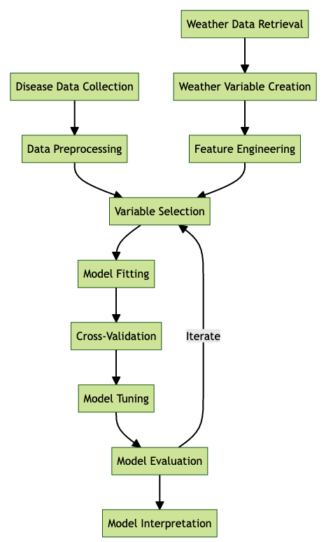
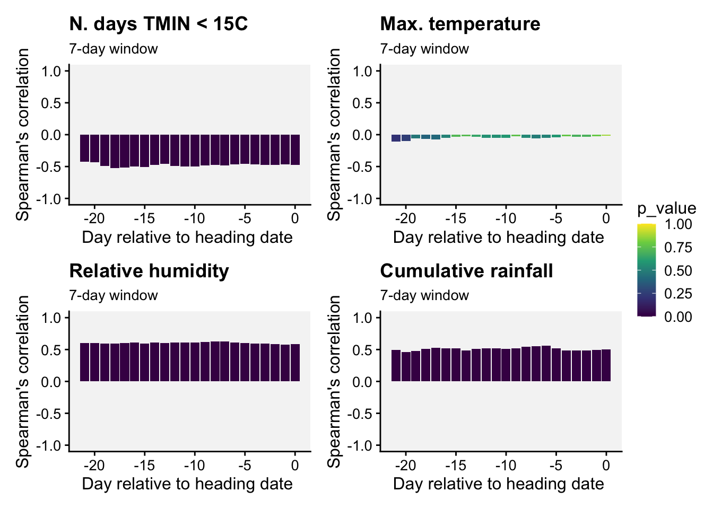
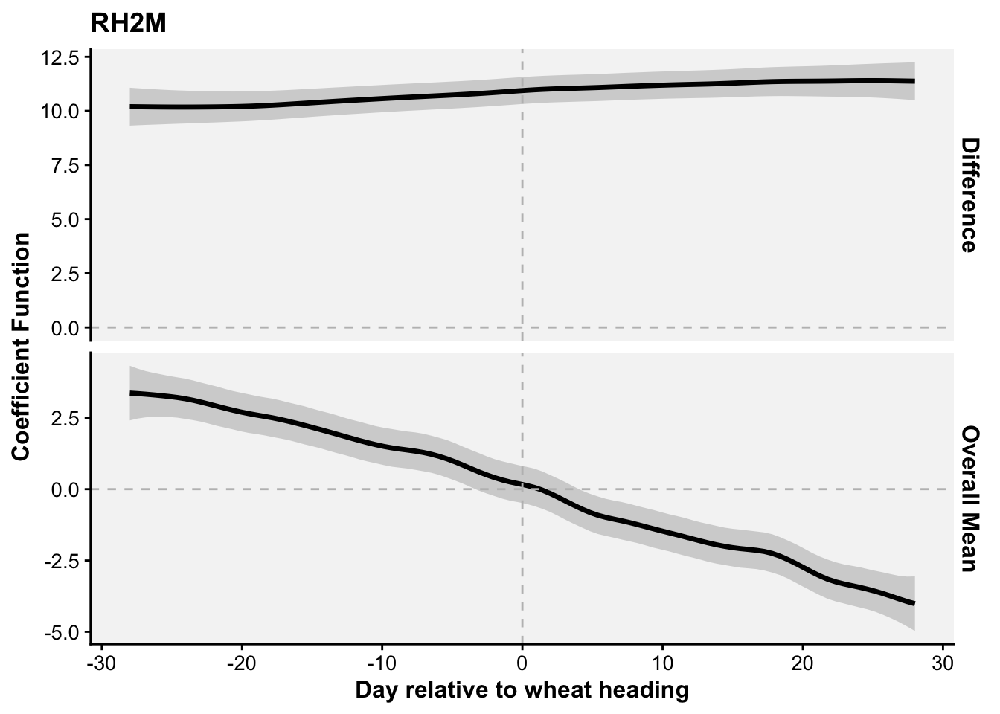
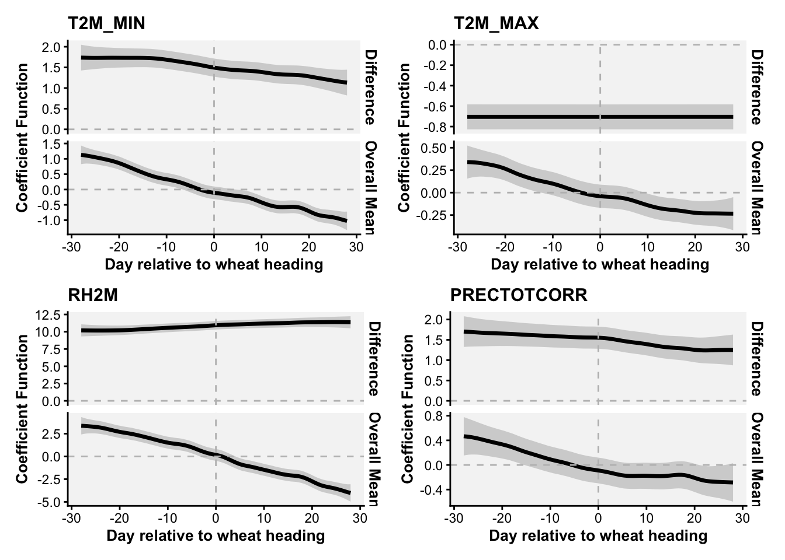
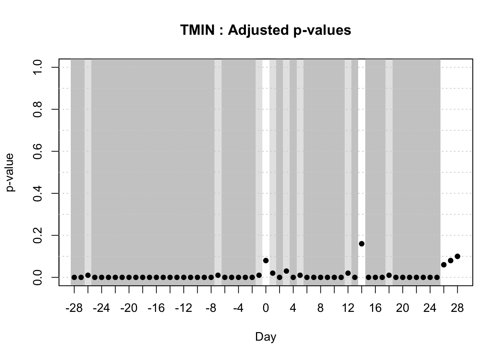
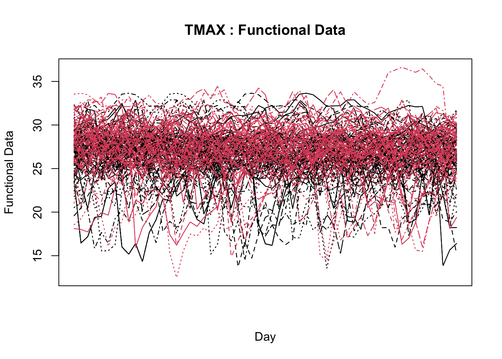
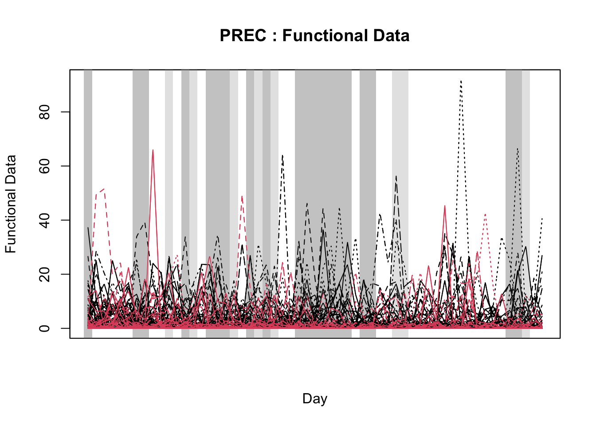

temp <- tibble::tribble(
~t, ~y,
12.0, 0.00,
15.0, 0.1,
20.0, 0.5,
25.0, 1.2,
30.0, 1.5,
35.0, 1.2,
40.0, 0.1
)20 Disease modeling
20.1 Introduction
As seen in the previous chapter, plant disease modeling is a crucial tool for predicting disease dynamics and informing management decisions when integrated into decision support systems. By leveraging models, researchers and practitioners can anticipate disease outbreaks, assess potential risks, and implement timely interventions to mitigate losses (Rossi et al. 2010; Savary et al. 2018).
Mathematical modeling involves representing empirical phenomena and experimental outcomes using mathematical functions. The data used for these models may be collected specifically for modeling purposes or drawn from existing experiments and observations originally conducted to address different research questions, with such data often found in the literature (Hau and Kranz 1990).
Mathematical models integrating plant, disease, and environmental - in most cases weather-based variables - factors have been developed since the mid-1900s (See recent review by González-Domínguez et al. (2023) ). Dynamic modeling of disease epidemics gained traction in the early 1960s with foundational work by Vanderplank and Zadoks, setting the stage for future advancements. Since then, researchers have contributed extensively to model development, mainly focusing on the plant disease cycle which outline pathogen development stages, such as dormancy, reproduction, dispersal, and pathogenesis, driven by interactions among host, pathogen, and environmental factors (De Wolf and Isard 2007).
A systematic map by Fedele et al. (2022) identified over 750 papers on plant disease models, primarily aimed at understanding system interactions (n = 680). This map revealed that while most models focus on system understanding, fewer are devoted to tactical management (n = 40), strategic planning (n = 38), or scenario analysis (n = 9).
In terms of model development, we can classify the models into two main groups based on the approach taken (González-Domínguez et al. 2023): Empirical or mechanistic approaches, which differ fundamentally in their basis, complexity and application (Figure 20.1).

Empirical models, which emerged in the mid-20th century, rely on data-driven statistical relationships between variables collected under varying field or controlled environments. These models often lack cause-effect understanding, making them less robust and requiring rigorous validation and calibration when applied in diverse environments, especially in regions that did not provide data for model construction. The parameters of the model change every time new data are incorporated during model development.
In contrast, mechanistic models, developed from a deep understanding of biological and epidemiological processes, explain disease dynamics based on known system behaviors in response to external variables—a concept-driven approach. These dynamic models quantitatively characterize the state of the pathosystem over time, offering generally more robust predictions by utilizing mathematical equations to describe how epidemics evolve under varying environmental conditions.
Both empirical and mechanistic approaches are valid methodologies extensively used in plant pathology research. The choice between these approaches depends on several factors, including data availability, urgency in model development, and, frequently, the researcher’s experience or preference. Empirical models focus on statistical relationships derived directly from data, whereas mechanistic models aim to represent the biological processes of disease progression through linked mathematical equations.
In mechanistic modeling, the equations used to predict specific disease components—such as infection frequency or the latency period—are often empirically derived from controlled experiments. For example, an infection frequency equation is typically based on data collected under specific environmental conditions, with models fitted to accurately describe observed patterns. These process-based models are then built by integrating empirically-derived equations or rules, which collectively simulate the disease cycle. Data and equations are sourced from published studies or generated from new experiments conducted by researchers.
Beyond their practical predictive value, mechanistic models are valuable tools for organizing existing knowledge about a particular disease, helping to identify gaps and guide future research efforts. An example of such work is the extensive collection of comprehensive mechanistic models developed for various plant diseases by the research group led by Prof. Vittorio Rossi in Italy (Rossi et al. 2008, 2014; Salotti et al. 2022; Salotti and Rossi 2023).
This chapter focuses mainly on empirical modeling. We begin by examining the types of data utilized in model development, focusing on those collected under controlled conditions, such as replicated laboratory or growth chamber experiments, as well as field data collected from several locations and years. We will also analyze real-world case studies, drawing on examples from the literature to replicate and understand model applications. Through these examples, we aim to illustrate the process of fitting models to data and underscore the role of modeling in advancing plant disease management practices.
20.2 Controlled environment
In this section, we will demonstrate, using examples from the literature, how statistical models can be fitted to data that represent various stages of the disease cycle.
Research on disease-environment interactions under controlled conditions - such as laboratory or growth chamber studies - lays the groundwork for building foundational models, including infection-based models and sub-models for specific processes like dormancy, dispersal, infection, and latency (De Wolf and Isard 2007; Krause and Massie 1975; Magarey et al. 2005).
Growth chambers and phytotrons are essential for testing the effects of individual variables, though these controlled results may not fully replicate field conditions. Anyway, laboratory experiments help clarify specific questions by isolating interactions, unlike complex field trials where host, pathogen, and environment factors interact. Polycyclic or “mini epidemic” experiments enable observation of disease dynamics under targeted conditions (Hau and Kranz 1990; Rotem 1988).
Once developed, these sub-models can be incorporated into larger mechanistic models that simulate the entire disease cycle, thereby mimicking disease progression over time (Rossi et al. 2008; Salotti and Rossi 2023). Alternatively, sub-models can also be used in stand-alone predictive systems where the process being modeled - such as infection - is the key factor in determining disease occurrence (MacHardy 1989; Magarey and Sutton 2007). For example, infection sub-models can be integrated into prediction systems that help schedule crop protection measures by forecasting when infection risk is highest.
20.2.1 Infection-based models
To model infection potential based on environmental factors, simple rules can be used with daily weather data, such as temperature and rainfall thresholds (Magarey et al. 2002). Simple decision aids, such as charts and graphs, also exist to help model infection potential by using combinations of daily average temperature and hours of wetness. These tools offer a straightforward approach to evaluate infection risks based on readily available weather data, supporting decision-making without complex modeling (Seem 1984). However, for many pathogens, hourly data is needed, requiring complex models that track favorable conditions hour by hour. These models start with specific triggers and can reset due to conditions like dryness or low humidity, simulating a biological clock for infection risk assessment (Magarey and Sutton 2007).
Modeling approaches vary based on available data and model goals. A common method is the matrix approach, like the Wallin potato late blight model, which uses rows for temperature and columns for moisture duration to estimate disease severity (Krause and Massie 1975) (see previous chapter on warning systems). Bailey enhanced this with an interactive matrix that combines temperature, relative humidity, and duration to assess infection risk across pathogens, making it versatile for various modeling needs (Bailey 1999).
When infection responses are measured at various temperature and wetness combinations, regression models can be developed to predict infection rates. These models often use polynomial, logistic, or complex three-dimensional response surface equations to represent the relationship between environmental conditions and infection potential. In an excellent review title “How to create and deploy infection models for plant pathogens” Magarey and Sutton (2007) discusses that many modeling approaches lack biological foundations and are not generic, making them unsuitable for developing a unified set of disease forecast models. While three-dimensional response surfaces, such as those created with sufficient temperature-moisture observations, offer detailed infection responses, they are often too complex and data-intensive for widespread use (seeTable 1 adapted from Magarey and Sutton (2007)).
| Approach | Strengths | Weaknesses |
|---|---|---|
| Matrix (Krause and Massie 1975; Mills 1944; Windels et al. 1998) | Easy; converts moisture/temperature combinations into severity values or risk categories. Tried and true approach. | Data to populate matrix may not be readily available. |
| Regression: – Polynomial (Evans 1992) – Logistic (Bulger 1987) |
Widely used in plant pathology. Available for many economically important pathogens. | Parameters not biologically based. Requires dataset for development. |
| Three-dimensional response surface (Duthie 1997) | Describes infection response in detail. | Parameters not biologically based. Complex, requires extensive data and processing time. |
| Degree wet hours (Pfender 2003) | Simple; based on degree hours, commonly used in entomology. Requires only Tmin and Tmax | Recently developed; assumes linear thermal response. |
| Temperature-moisture response function (Magarey et al. 2005) | Simple; based on crop modeling functions, requires only Tmin, Topt and Tmax | Recently developed. |
In the following sections, I will demonstrate how various biologically meaningful models fit infection data, using temperature, wetness duration, or a combination of both as predictors.
20.2.1.1 Temperature effects
20.2.1.1.1 Generalized beta-function
Among several non-linear models that can be fitted to infection responses to temperature, the generalized beta-function is an interesting alternative (Hau and Kranz 1990). This is a nonlinear model with five parameters. Two of them, namely \(b\) and \(c\) , have a biological meaning because they are estimates of the minimum and maximum temperature of the biological process under consideration.
We will use a subset of the data obtained from a study conducted under controlled conditions that aimed to assess the influence of temperature on the symptom development of citrus canker in sweet orange (Dalla Pria et al. 2006). The data used here is only for severity on the cultivar Hamlin (plot a in Figure 20.2). The data was extracted using the R package {digitize} as shown here on this tweet.

Let’s enter the data manually. Where \(t\) is the temperature and \(y\) is the severity on leaves.
Fit the generalized beta-function (Hau and Kranz 1990). The model can be written as:
\[ y = a*((t - b )^d)*((c - t)^e) \]
where \(b\) and \(c\) represent minimum and maximum temperatures, respectively, for the development of the disease, \(a\), \(d\) and \(e\) are parameters to be estimated, \(t\) is the temperature and \(y\) is disease severity. We need the {minpack.lm} library to avoid parameterization issues.
library(tidyverse)
library(minpack.lm)
fit_temp <- nlsLM(
y ~ a * ((t - b) ^ d) * ((c - t) ^ e),
start = list(
a = 0,
b = 10,
c = 40,
d = 1.5,
e = 1
),
algorithm = "port",
data = temp
)
summary(fit_temp)
Formula: y ~ a * ((t - b)^d) * ((c - t)^e)
Parameters:
Estimate Std. Error t value Pr(>|t|)
a 0.001303 0.006295 0.207 0.855
b 11.999999 4.875414 2.461 0.133
c 40.137236 0.346763 115.748 7.46e-05 ***
d 1.760101 1.193017 1.475 0.278
e 0.830868 0.445213 1.866 0.203
---
Signif. codes: 0 '***' 0.001 '**' 0.01 '*' 0.05 '.' 0.1 ' ' 1
Residual standard error: 0.1121 on 2 degrees of freedom
Algorithm "port", convergence message: Relative error between `par' and the solution is at most `ptol'.modelr::rsquare(fit_temp, temp)[1] 0.9898275Store the model parameters in objects.
fit_temp$m$getAllPars() a b c d e
0.00130259 11.99999931 40.13723602 1.76010097 0.83086798 a <- fit_temp$m$getAllPars()[1]
b <- fit_temp$m$getAllPars()[2]
c <- fit_temp$m$getAllPars()[3]
d <- fit_temp$m$getAllPars()[4]
e <- fit_temp$m$getAllPars()[5]Create a data frame for predictions at each temperature unit from 10 to 45 degree Celsius.
t <- seq(10, 45, 0.1)
y <- a * ((t - b) ^ d) * ((c - t) ^ e)
dat <- data.frame(t, y)Plot the observed and predicted data using {ggplot2} package.
library(ggplot2)
library(r4pde)
dat |>
ggplot(aes(t, y)) +
geom_line() +
geom_point(data = temp, aes(t, y)) +
theme_r4pde(font_size = 16) +
labs(x = "Temperature", y = "Severity",
title = "Generalized beta-function")
20.2.1.1.2 Analytis beta function
Ji et al. (2023) tested and compared various mathematical equations to describe the response of mycelial growth to temperature for several fungi associated with Grapevine trunk diseases. The authors found that the beta equation (Analytis 1977) provided the best fit and, therefore, was considered the most suitable for all fungi.
The model equation for re-scaled severity (0 to 1) as a function of temperature is given by:
\(Y = \left( a \cdot T_{eq}^b \cdot (1 - T_{eq}) \right)^c \quad ; \quad \text{if } Y > 1, \text{ then } Y = 1\)
where
\(T_{eq} = \frac{T - T_{\text{min}}}{T_{\text{max}} - T_{\text{min}}}\)
\(T\) is the temperature in degrees Celsius. \(T_{\text{min}}\) is the minimum temperature, \(T_{\text{max}}\) is the maximum temperature for severity. The \(a\) , \(b\) , and \(c\) are parameters that define the top, symmetry, and size of the unimodal curve.
Let’s rescale (0 to 1) the data on the citrus canker using the function rescale of the {scales} package.
library(scales)
Attaching package: 'scales'The following object is masked from 'package:purrr':
discardThe following object is masked from 'package:readr':
col_factortemp$yscaled <- rescale(temp$y)
temp# A tibble: 7 × 3
t y yscaled
<dbl> <dbl> <dbl>
1 12 0 0
2 15 0.1 0.0667
3 20 0.5 0.333
4 25 1.2 0.8
5 30 1.5 1
6 35 1.2 0.8
7 40 0.1 0.0667Now we can fit the model using the same nlsLM function.
# Define the minimum and maximum temperatures
Tmin <- 12
Tmax <- 40
library(minpack.lm)
fit_temp2 <- nlsLM(
yscaled ~ (a * ((t - Tmin) / (Tmax - Tmin))^b * (1 - ((t - Tmin) / (Tmax - Tmin))))^c,
data = temp,
start = list(a = 1, b = 2, c = 3), # Initial guesses for parameters
algorithm = "port"
)
summary(fit_temp2)
Formula: yscaled ~ (a * ((t - Tmin)/(Tmax - Tmin))^b * (1 - ((t - Tmin)/(Tmax -
Tmin))))^c
Parameters:
Estimate Std. Error t value Pr(>|t|)
a 6.7625 0.3218 21.013 3.03e-05 ***
b 1.9648 0.1030 19.072 4.45e-05 ***
c 1.1607 0.1507 7.701 0.00153 **
---
Signif. codes: 0 '***' 0.001 '**' 0.01 '*' 0.05 '.' 0.1 ' ' 1
Residual standard error: 0.03955 on 4 degrees of freedom
Algorithm "port", convergence message: Relative error in the sum of squares is at most `ftol'.modelr::rsquare(fit_temp2, temp)[1] 0.9948325Lets’s store the model parameters in objects.
fit_temp2$m$getAllPars() a b c
6.762509 1.964817 1.160702 a <- fit_temp2$m$getAllPars()[1]
b <- fit_temp2$m$getAllPars()[2]
c <- fit_temp2$m$getAllPars()[3]Again, we create a data frame for predictions at each temperature unit from 10 to 45 degree Celsius.
Tmin <- 12
Tmax <- 40
t <- seq(10, 45, 0.1)
y <- (a * ((t - Tmin) / (Tmax - Tmin))^b * (1 - ((t - Tmin) / (Tmax - Tmin))))^c
dat2 <- data.frame(t, y)And now we can plot the observed and predicted data using {ggplot2} package.
library(ggplot2)
library(r4pde)
dat2 |>
ggplot(aes(t, y)) +
geom_line() +
geom_point(data = temp, aes(t, yscaled)) +
theme_r4pde(font_size = 16) +
labs(x = "Temperature", y = "Scaled severity",
title = "Analytis beta function")
20.2.1.2 Moisture effects
20.2.1.2.1 Monomolecular function
For this example, we will use a subset of the data obtained from a study conducted under controlled conditions that aimed to assess the effects of moisture duration on the symptom development of citrus canker in sweet orange (Dalla Pria et al. 2006). As in the previous example for temperature effects, the data used here is only for severity on the cultivar Hamlin (plot a in Figure 20.3). The data was also extracted using the R package digitize.
Let’s look at the original data and the predictions by the model fitted in the paper.

For this pattern in the data, we will fit a three-parameter asymptotic regression model. These models describe a limited growth, where y approaches an horizontal asymptote as x tends to infinity. This equation is also known as Monomolecular Growth, Mitscherlich law or von Bertalanffy law. See this tutorial for comprehensive information about fitting several non-linear regression models in R.
Again, we enter the data manually. The 𝑥x is wetness duration in hours and 𝑦y is severity.
wet <- tibble::tribble(~ x, ~ y,
0 , 0,
4 , 0.50,
8 , 0.81,
12, 1.50,
16, 1.26,
20, 2.10,
24, 1.45)The model can be written as:
\(y = c1 + (d1-c1)*(1-exp(-x/e1))\)
where \(c\) is the lower limit (at \(x = 0\)), the parameter \(d\) is the upper limit and the parameter \(e\) (greater than 0) is determining the steepness of the increase as \(x\).
We will solve the model again using the nlsLM function. We should provide initial values for the three parameters.
fit_wet <- nlsLM(y ~ c1 + (d1 - c1) * (1 - exp(-x / e1)),
start = list(c1 = 0.5,
d1 = 3,
e1 = 1),
data = wet)
summary(fit_wet)
Formula: y ~ c1 + (d1 - c1) * (1 - exp(-x/e1))
Parameters:
Estimate Std. Error t value Pr(>|t|)
c1 -0.04898 0.31182 -0.157 0.8828
d1 2.00746 0.70594 2.844 0.0467 *
e1 11.63694 9.33183 1.247 0.2804
---
Signif. codes: 0 '***' 0.001 '**' 0.01 '*' 0.05 '.' 0.1 ' ' 1
Residual standard error: 0.3296 on 4 degrees of freedom
Number of iterations to convergence: 7
Achieved convergence tolerance: 1.49e-08modelr::rsquare(fit_wet, wet)[1] 0.8532282Store the value of the parameters in the respective object.
HW <- seq(0, 24, 0.1)
c1 <- fit_wet$m$getAllPars()[1]
d1 <- fit_wet$m$getAllPars()[2]
e1 <- fit_wet$m$getAllPars()[3]
y <- (c1 + (d1 - c1) * (1 - exp(-HW / e1)))
dat2 <- data.frame(HW, y)Now we can plot the predictions and the original data.
dat2 |>
ggplot(aes(HW, y)) +
geom_line() +
geom_point(data = wet, aes(x, y)) +
theme_r4pde(font_size = 16) +
labs(x = "Wetness duration", y = "Severity")
20.2.1.2.2 Weibull function
In the study by (Ji et al. 2021, 2023), a Weibull model was fitted to the re-scaled data (0 to 1) on the effect of moisture duration on spore germination or infection. Let’s keep working with the re-scaled data on the citrus canker.
The model is given by:
\(y = 1 - \exp(-(a \cdot x)^b)\)
where \(y\) is the response variable, \(x\) is the moist duration, \(a\) is the scale parameter influencing the rate of infection and \(b\) is the shape parameter affecting the curve’s shape and acceleration
wet$yscaled <- rescale(wet$y)
wet# A tibble: 7 × 3
x y yscaled
<dbl> <dbl> <dbl>
1 0 0 0
2 4 0.5 0.238
3 8 0.81 0.386
4 12 1.5 0.714
5 16 1.26 0.6
6 20 2.1 1
7 24 1.45 0.690fit_wet2 <- nlsLM(
yscaled ~ 1 - exp(-(a * x)^b),
data = wet,
start = list(a = 1, b = 2), # Initial guesses for parameters a and b
)
summary(fit_wet2)
Formula: yscaled ~ 1 - exp(-(a * x)^b)
Parameters:
Estimate Std. Error t value Pr(>|t|)
a 0.07684 0.01296 5.93 0.00195 **
b 1.07610 0.37103 2.90 0.03378 *
---
Signif. codes: 0 '***' 0.001 '**' 0.01 '*' 0.05 '.' 0.1 ' ' 1
Residual standard error: 0.1404 on 5 degrees of freedom
Number of iterations to convergence: 26
Achieved convergence tolerance: 1.49e-08modelr::rsquare(fit_wet2, wet)[1] 0.8534077Set the value of the parameters in the respective objects
x <- seq(0, 24, 0.1)
a <- fit_wet2$m$getAllPars()[1]
b <- fit_wet2$m$getAllPars()[2]
y <- 1 - exp(-(a * x)^b)
dat3 <- data.frame(x, y)dat3 |>
ggplot(aes(x, y)) +
geom_line() +
geom_point(data = wet, aes(x, yscaled)) +
theme_r4pde(font_size = 16) +
labs(x = "Wetness duration", y = "Scaled severity")
20.2.1.3 Integrating temperature and wetness effects
The equations developed for the separate effects can be integrated to create a surface response curve or a simple contour plot. Let’s first integrate the generalized beta and the monomolecular models for the original severity data for the citrus canker experiment.
First, we need a data frame for the interaction between temperature \(t\) and hours of wetness \(hw\). Then, we obtain the disease value for each combination of \(t\) and \(hw\).
t <- rep(1:40, 40)
hw <- rep(1:40, each = 40)
# let's fit the two models again and store the parameters in objects
# Temperature effects
fit_temp <- nlsLM(
y ~ a * ((t - b) ^ d) * ((c - t) ^ e),
start = list(
a = 0,
b = 10,
c = 40,
d = 1.5,
e = 1
),
algorithm = "port",
data = temp
)
fit_temp$m$getAllPars() a b c d e
0.00130259 11.99999931 40.13723602 1.76010097 0.83086798 a <- fit_temp$m$getAllPars()[1]
b <- fit_temp$m$getAllPars()[2]
c <- fit_temp$m$getAllPars()[3]
d <- fit_temp$m$getAllPars()[4]
e <- fit_temp$m$getAllPars()[5]
## Moist duration effects
fit_wet <- nlsLM(y ~ c1 + (d1 - c1) * (1 - exp(-x / e1)),
start = list(c1 = 0.5,
d1 = 3,
e1 = 1),
data = wet)
c1 <- fit_wet$m$getAllPars()[1]
d1 <- fit_wet$m$getAllPars()[2]
e1 <- fit_wet$m$getAllPars()[3]
dis <-
(a * (t - b) ^ d) * ((c - t) ^ e) * (c1 + (d1 - c1) * (1 - exp(- hw / e1)))
validation <- data.frame(t, hw, dis)Now the contour plot can be visualized using {ggplot2} and {geomtextpath} packages.
library(geomtextpath)
ggplot(validation, aes(t, hw, z = dis)) +
geom_contour_filled(bins = 8, alpha = 0.7) +
geom_textcontour(bins = 8,
size = 2.5,
padding = unit(0.05, "in")) +
theme_light(base_size = 10) +
theme(legend.position = "right") +
ylim(0, 40) +
labs(y = "Wetness duration (hours)",
fill = "Severity",
x = "Temperature (Celcius)",
title = "Integrating generalized beta and monomolecular")
In the second example, let’s integrate the Analytis beta and the Weibull model:
fit_temp2 <- nlsLM(
yscaled ~ (a * ((t - Tmin) / (Tmax - Tmin))^b * (1 - ((t - Tmin) / (Tmax - Tmin))))^c,
data = temp,
start = list(a = 1, b = 2, c = 3), # Initial guesses for parameters
algorithm = "port"
)
fit_temp2$m$getAllPars() a b c
6.762509 1.964817 1.160702 a2 <- fit_temp2$m$getAllPars()[1]
b2 <- fit_temp2$m$getAllPars()[2]
c2 <- fit_temp2$m$getAllPars()[3]
fit_wet2 <- nlsLM(
yscaled ~ 1 - exp(-(d * x)^e),
data = wet,
start = list(d = 1, e = 2), # Initial guesses for parameters a and b
)
d2 <- fit_wet2$m$getAllPars()[1]
e2 <- fit_wet2$m$getAllPars()[2]
Tmin <- 12
Tmax <- 40
dis2 <- (a2 * ((t - Tmin) / (Tmax - Tmin))^b2 * (1 - ((t - Tmin) / (Tmax - Tmin))))^c2 * 1 - exp(-(d2 * hw)^e2)
t <- rep(1:40, 40)
hw <- rep(1:40, each = 40)
validation2 <- data.frame(t, hw, dis2)
validation2 <- validation2 |>
filter(dis2 != "NaN") |>
mutate(dis2 = case_when(dis2 < 0 ~ 0,
TRUE ~ dis2))Now the plot.
ggplot(validation2, aes(t, hw, z = dis2)) +
geom_contour_filled(bins = 7, alpha = 0.7) +
geom_textcontour(bins = 7,
size = 2.5,
padding = unit(0.05, "in")) +
theme_light(base_size = 10) +
theme(legend.position = "right") +
ylim(0, 40) +
labs(y = "Wetness duration (hours)",
fill = "Severity",
x = "Temperature (Celcius)",
title = "Integrating generalized beta and monomolecular")
We can create a 3D surface plot to visualize the predictions, as it was used in the original paper. Note that In plot_ly, a 3D surface plot requires a matrix or grid format for the z values, with corresponding vectors for x and y values that define the axes. If the data frame (validation2) has three columns (t, hw, and dis2), we’ll need to convert dis2 into a matrix format that plot_ly can interpret for a surface plot.
{kind=link}
library(plotly)
library(reshape2)
z_matrix <- acast(validation2, hw ~ t, value.var = "dis2")
x_vals <- sort(unique(validation2$t))
y_vals <- sort(unique(validation2$hw))
plot_ly(x = ~x_vals, y = ~y_vals, z = ~z_matrix, type = "surface") |>
config(displayModeBar = FALSE) |>
layout(
scene = list(
xaxis = list(title = "Temperature (°C)", nticks = 10),
yaxis = list(title = "Wetness Duration (hours)", range = c(0, 40)),
zaxis = list(title = "Severity"),
aspectratio = list(x = 1, y = 1, z = 1)
),
title = "Integrating Generalized Beta and Monomolecular"
)20.2.1.4 Magarey’s generic infection model
In the early 2000s, Magarey and collaborators (Magarey et al. 2005) proposed a generic infection model for foliar fungal pathogens, designed to predict infection periods based on limited data on temperature and wetness requirements. The model uses cardinal temperatures (minimum, optimum, maximum) and the minimum wetness duration (Wmin) necessary for infection. The model can incorporate inputs based on estimated cardinal temperatures and surface wetness duration. These values are available for numerous pathogens and can be consulted in the literature (See table 2 of the paper by Magarey et al. (2005)).
The model utilizes a temperature response function, which is adjusted to the pathogen’s minimum and optimum wetness duration needs, allowing it to be broadly applicable even with limited data on specific pathogens. The model was validated with data from 53 studies, showing good accuracy and adaptability, even for pathogens lacking comprehensive data (Magarey et al. 2005).
The function is given by
\(f(T) = \left( \frac{T_{\text{max}} - T}{T_{\text{max}} - T_{\text{opt}}} \right)^{\frac{T_{\text{opt}} - T_{\text{min}}}{T_{\text{max}} - T_{\text{opt}}}} \times \left( \frac{T - T_{\text{min}}}{T_{\text{opt}} - T_{\text{min}}} \right)^{\frac{T_{\text{opt}} - T_{\text{min}}}{T_{\text{opt}} - T_{\text{min}}}}\)
where \(T\) is the temperature, \(T_{\text{min}}\) is the minimum temperature, \(T_{\text{opt}}\) is the optimum temperature, and \(T_{\text{max}}\) is the maximum temperature for infection.
The wetness duration requirement is given by
\(W(T) = \frac{W_{\text{min}}}{f(T)} \leq W_{\text{max}}\)
where \(W_{\text{min}}\) is the minimum wetness duration requirement, and \(W_{\text{max}}\) is an optional upper limit on \(W(T)\).
Let’s write the functions for estimating the required wetness duration at each temperature.
temp_response <- function(T, Tmin, Topt, Tmax) {
if (T < Tmin || T > Tmax) {
return(0)
} else {
((Tmax - T) / (Tmax - Topt))^((Topt - Tmin) / (Tmax - Topt)) *
((T - Tmin) / (Topt - Tmin))^((Topt - Tmin) / (Topt - Tmin))
}
}
# Define the function to calculate wetness duration requirement W(T)
wetness_duration <- function(T, Wmin, Tmin, Topt, Tmax, Wmax = Inf) {
f_T <- temp_response(T, Tmin, Topt, Tmax)
if (f_T == 0) {
return(0) # Infinite duration required if outside temperature range
}
W <- Wmin / f_T
return(min(W, Wmax)) # Apply Wmax as an upper limit if specified
}Let’s set the parameters for the fungus Venturia inaequalis, the cause of apple scab.
# Parameters for Venturia inaequalis (apple scab)
T <- seq(0, 35, by = 0.5)
Wmin <- 6
Tmin <- 1
Topt <- 20
Tmax <- 35
Wmax <- 40.5
# Calculate wetness duration required at each temperature
W_T <- sapply(T, wetness_duration, Wmin, Tmin, Topt, Tmax, Wmax)
temperature_data_applescab <- data.frame(
Temperature = T,
Wetness_Duration = W_T
)And now the parameters for the fungus Phakopsora pachyrhizi, the cause of soybean rust in soybean.
# Parameters for Phakposora pachyrhizi
T <- seq(0, 35, by = 0.5)
Wmin <- 8
Tmin <- 10
Topt <- 23
Tmax <- 28
Wmax <- 12
# Calculate wetness duration required at each temperature
W_T <- sapply(T, wetness_duration, Wmin, Tmin, Topt, Tmax, Wmax)
temperature_data_soyrust <- data.frame(
Temperature = T,
Wetness_Duration = W_T)We can produce the plots for each pathogen.
applescab <- ggplot(temperature_data_applescab, aes(x = Temperature, y = Wetness_Duration)) +
geom_line(color = "black", linewidth = 1, linetype =1) +
theme_r4pde(font_size = 14)+
labs(x = "Temperature (°C)", y = "Wetness Duration (hours)",
subtitle = "Venturia inaequalis")+
theme(plot.subtitle = element_text(face = "italic"))
soyrust <- ggplot(temperature_data_soyrust, aes(x = Temperature, y = Wetness_Duration)) +
geom_line(color = "black", linewidth = 1, linetype =1) +
theme_r4pde(font_size = 14)+
labs(x = "Temperature (°C)", y = "Wetness Duration (hours)",
subtitle = "Phakopsora pachyrizhi")+
theme(plot.subtitle = element_text(face = "italic"))
library(patchwork)
applescab | soyrust
20.2.2 Latency period models
The latent period can be defined as “the length of time between the start of the infection process by a unit of inoculum and the start of production of infectious units” (Madden et al. 2007). The latent period, analogous to the reproductive maturity age of nonparasitic organisms, defines the generation time between infections and is a key factor in pathogen development and epidemic progress in plant disease epidemiology (Vanderplank 1963). As a critical trait of aggressiveness, especially in polycyclic diseases, it largely determines the potential number of infection cycles within a season, impacting the overall epidemic intensity (Lannou 2012).
20.2.2.1 Parabolic function
The effects of temperature on the length of the incubation and latent periods of hawthorn powdery mildew, caused by Podosphaera clandestina, were studied by Xu and Robinson (2000). In that work, the authors inoculated the leaves and, each day after inoculation, the upper surface of each leaf was examined for mildew colonies and conidiophores using a pen-microscope (×50). Sporulation was recorded at the leaf level, noting the number of colonies and the first appearance dates of colonies and sporulation for each leaf.
The latent period (LP) was defined as the time from inoculation to the first day of observed sporulation on the leaf. Due to the skewed distribution of LP across temperatures and inoculations, medians were used to summarize LP rather than means (Xu and Robinson 2000).
Let’s look at two plots extracted from the paper. The first, on the left-hand side, is the original number of days of the latent period of each evaluated temperature (note: the solid symbol is for constant temperature while the open circle is for fluctuating temperature). On the right-hand side, the relationship between temperature and rates of development of powdery mildew under constant temperature during the latent periods; the solid line indicates the fitted model. The rate of fungal development was calculated as the reciprocal of the corresponding observed incubation (in hours) and latent periods.

The latent period data in days for the solid black circle (constant temperature) above was extracted using the {digitize} R package.
latent <- tibble::tribble(
~T, ~days,
10L, 13L,
11L, 16L,
13L, 8L,
14L, 9L,
15L, 7L,
16L, 7L,
17L, 6L,
18L, 6L,
19L, 6L,
20L, 6L,
21L, 5L,
22L, 5L,
23L, 6L,
24L, 6L,
25L, 5L,
26L, 7L,
27L, 7L,
28L, 10L
)Let’s reproduce the two plots using the datapoints.
#|fig-width: 10
#|fig-height: 4
library(ggplot2)
library(r4pde)
p_latent <- latent |>
ggplot(aes(T, days))+
geom_point()+
theme_r4pde()
latent_rate <- data.frame(
T = latent$T, # Scale temperature
R = 1/latent$days/24
)
p_latent_rate <- latent_rate |>
ggplot(aes(T, R))+
geom_point()+
theme_r4pde()
library(patchwork)
p_latent | p_latent_rate
We will fit the parabolic function proposed by Bernard et al. (2013) which predicts a thermal response curve (developmental rate, R), which is the relationship between the inverse of latent period and temperature. We need to enter the values for optimum temperature (where latent period is shortest) and the minimum latent period. The model is given by:
\(R(T) = \frac{k}{\text{LP}_{\text{min}} + \text{a} \times (T - T_{\text{opt}})^2}\)
# Load necessary package
#library(minpack.lm)
# Define the model formula
# model_formula <- R ~ (a + b * T)^(c * T)
LPmin <- 5 # minimum latent period
Topt <- 21 # Optimal temperature
model_formula2 <- R ~ k / (LPmin + a * (T - Topt)^2)
# Set initial parameter estimates
#start_values <- list(a = 0.1, b = 0.01, c = 0.01)
start_values2 <- list(a = 0.1, k = 1)
# Fit the model
#fit_rate <- nlsLM(model_formula, data = latent_rate, start = start_values)
fit_rate2 <- nls(model_formula2, data = latent_rate, start = start_values2)
# View the summary of the fit
summary(fit_rate2)
Formula: R ~ k/(LPmin + a * (T - Topt)^2)
Parameters:
Estimate Std. Error t value Pr(>|t|)
a 0.060274 0.010705 5.63 3.76e-05 ***
k 0.039520 0.001464 26.99 9.05e-15 ***
---
Signif. codes: 0 '***' 0.001 '**' 0.01 '*' 0.05 '.' 0.1 ' ' 1
Residual standard error: 0.0006936 on 16 degrees of freedom
Number of iterations to convergence: 6
Achieved convergence tolerance: 3.183e-06fit_rate2$m$getAllPars() a k
0.06027417 0.03952035 a <- fit_rate2$m$getAllPars()[1]
k <- fit_rate2$m$getAllPars()[2]Now we reproduce the plot with the fitted data. Note that the curve is not the same shown in the paper because we used a different equation.
T <- seq(10, 29, 0.1)
#R <- (a + b * T)^(c * T)
R <- k / (LPmin + a * (T - Topt)^2)
dat2 <- data.frame(T, R)
dat2 |>
ggplot(aes(T, R)) +
geom_line() +
geom_point(data = latent_rate, aes(T, R)) +
theme_r4pde(font_size = 16) +
labs(x = "Temperature", y = "Inverse of the latent period (hour -1)",
title = "")
20.3 Field data
While pathogen inoculum, host resistance, and agronomic factors are sometimes included alongside weather in empirically derived models using field data (Cao et al. 2015; Mehra et al. 2017; Shah et al. 2013), only a few models explicitly incorporate non-weather factors (Mehra et al. 2016; Paul and Munkvold 2004). In most cases, these models primarily rely on weather variables as predictors (González-Domínguez et al. 2023). This focus reflects the critical role of weather in driving key processes in the disease cycle, such as pathogen survival, dispersal, host infection, and reproduction (De Wolf and Isard 2007). Consequently, a primary objective for plant epidemiologists is to identify and quantify the relationships between weather conditions and measures of disease intensity (Coakley et al. 1988; Coakley 1988; Del Ponte et al. 2006; El Jarroudi et al. 2017; Pietravalle et al. 2003; Shah et al. 2013, 2019b).
In modeling efforts, the disease variable can be represented either as a continuous measure (e.g., incidence or severity) or as categorical data, which may be binary (e.g., non-epidemic vs. epidemic) or multinomial (e.g., low, moderate, and high severity). This variability in response types informs the selection of suitable modeling techniques, ensuring that the model accurately captures the nature of the data and the relationships between weather variables and disease outcomes.
In this section, I will demonstrate several modeling approaches that can be applied when field data is available. These examples will cover a range of techniques, starting with variable construction, which involves transforming raw weather data into summary measures that can effectively represent conditions relevant to disease outcomes. Next, variable selection methods will be explored to identify the most influential predictors, ensuring that models are both accurate and interpretable. The focus will then shift to model fitting, showing how different models, such as linear and logistic regression, can be used to capture relationships between weather variables and disease endpoints. Finally, model evaluation will be addressed, emphasizing metrics like accuracy, sensitivity, and area under the curve (AUC), which are crucial for assessing the predictive performance and reliability of the models developed.
Follows a typical workflow for developing a disease prediction model, starting with disease data collection and weather data retrieval. The process includes data pre-processing, feature engineering, variable selection, model fitting, cross-validation, model tuning, and evaluation, followed by interpretation. Iterative feedback between model evaluation and variable selection aims to optimize model performance.

20.3.1 Variable creation and selection
Variable construction, particularly for weather-related variables, involves not only data transformation methods but also requires an understanding of how diseases respond to specific weather conditions at particular growth stages (De Cól et al. 2024; De Wolf et al. 2003). This approach ensures that the variables derived accurately capture biologically relevant processes, improving the realism and relevance of the model inputs.
In addition, data mining techniques are employed to systematically explore time-series data and identify potential weather-disease relationships (Coakley et al. 1988; Pietravalle et al. 2003; Shah et al. 2019b). These techniques involve creating lagged variables, moving averages, or window-based summaries that capture delayed or cumulative effects of weather on disease outcomes. By integrating system knowledge with data mining, researchers aim to construct variables that are both biologically meaningful and statistically robust, improving the chances of identifying predictors that enhance model accuracy and interpretability.
20.3.1.1 Window-pane
20.3.1.1.1 Variable construction
With regards to weather variable creation and selection for data-mining purposes, window-pane analysis, first introduced in the mid-1980s (Coakley 1985), has been widely used in modeling studies in plant pathology (Calvero Jr et al. 1996; Coakley et al. 1988; Coakley 1988; Dalla Lana et al. 2021b; Gouache et al. 2015; Kriss et al. 2010; Pietravalle et al. 2003; Te Beest et al. 2008). This method aids in identifying weather conditions that are most strongly associated with disease outcomes by segmenting a continuous time series (e.g. daily temperature, relative humidity, and rainfall), into discrete, fixed-length windows.
The analysis involves summarizing conditions within each window (e.g., mean, sum, count) and correlating these summaries with disease outcomes, which may be expressed as continuous measures (e.g., severity) or as categorical variables (e.g., low vs. high levels). This approach allows users to set specific start and end times, as well as window lengths, enabling the exploration of different temporal relationships between weather and disease. By sliding the start and end points along the series, multiple overlapping windows are generated, making it possible to identify the most informative variables for modeling. The selected optimal fixed-time and fixed-window-length variables derived from this analysis serve as predictors in model development, helping to improve the accuracy and relevance of disease forecasting models.
Here’s an R code that demonstrates how the windows are defined over a 28-day period using four fixed window lengths (7, 14, 21, and 28 days), generating a total of 46 variables.
Code
library(dplyr)
library(ggplot2)
# Define total days and window lengths
max_days <- 28
window_lengths <- c(7, 14, 21, 28)
# Create an empty data frame for all sliding windows
window_data <- data.frame()
# Populate the data frame with start and end points for each window
var_id <- 1 # Variable ID for each window
for (length in sort(window_lengths)) { # Sort window lengths from shortest to longest
for (start_day in 0:(max_days - length)) {
end_day <- start_day + length
window_data <- rbind(
window_data,
data.frame(
start = start_day,
end = end_day,
var_id = var_id,
window_length = length
)
)
var_id <- var_id + 1 # Increment variable ID
}
}
# Convert window_length to a factor for correct ordering in the legend
window_data$window_length <- factor(window_data$window_length, levels = sort(unique(window_data$window_length)))window_data |>
ggplot(aes(x = start, xend = end, y = var_id, yend = var_id)) +
geom_segment(linewidth = 2) + # Line segments for each window
scale_x_continuous(breaks = 0:max_days, limits = c(0, max_days)) +
scale_y_continuous(breaks = 1:var_id) +
labs(title = "Window-pane",
subtitle = "Each variable of 7, 14, 21 and 28 days length over 28 days",
x = "Days", y = "Variable ID", color = "Window Length (days)") +
r4pde::theme_r4pde(font_size = 14) +
theme(legend.position = "right")
The window-pane analysis requires a spreadsheet program (Kriss et al. 2010) or a specific algorithm that automates the creation of sliding windows at defined starting and ending times relative to a reference date. In the seminal work, software was programmed in the FORTRAN language and named WINDOW (Coakley 1985). It enabled the creation of windows and the calculation of summary statistics, including correlation with disease severity. Building on the original idea, a Genstat 6.1 algorithm was developed in the early 2000s, incorporating further adjustments such as the implementation of bootstrapping analysis to validate correlations and misclassifications identified by window-pane (Pietravalle et al. 2003; Te Beest et al. 2008). More recently, window-pane analysis including variable creation and analysis has been conducted in R using custom-made scripts (Dalla Lana et al. 2021b; Gouache et al. 2015).
I will demonstrate the windowpane() function of the {r4pde} package developed to facilitate the creation of variables using the window-pane approach. First, let’s load a dataset that contains information on the disease, as well as metadata, including a key date that will be used as the starting point for window creation. The BlastWheat dataset, which is included in the {r4pde} package, was provided by De Cól et al. (2024).
library(r4pde)
library(dplyr)
trials <- BlastWheat
glimpse(trials)Rows: 143
Columns: 10
$ study <dbl> 1, 2, 3, 4, 5, 6, 7, 8, 9, 10, 11, 12, 13, 14, 15, 16, 17, …
$ year <dbl> 2012, 2012, 2012, 2012, 2012, 2013, 2013, 2013, 2013, 2014,…
$ location <chr> "Dourados", "Palotina", "Londrina", "Planaltina", "Itaberá"…
$ state <chr> "MS", "PR", "PR", "DF", "SP", "MS", "MG", "DF", "SP", "MG",…
$ latitude <dbl> -22.27516, -24.35483, -23.35916, -15.60387, -24.06832, -22.…
$ longitude <dbl> -54.81640, -53.75794, -51.16476, -47.71381, -49.15575, -54.…
$ heading <chr> "10-05-2012", "09-06-2012", "01-06-2012", "03-05-2012", "15…
$ inc_mean <dbl> 93.30, 40.50, 100.00, 35.50, 7.71, 48.70, 22.00, 46.50, 68.…
$ index_mean <dbl> 68.65, 11.73, 92.86, 6.36, 0.35, 9.17, 2.91, 10.41, 41.86, …
$ yld_mean <dbl> 1097.00, 1219.38, 495.12, 1747.44, 2148.31, 506.00, 1562.75…We can note that the heading date, which will be used as reference date in our analysis, is not defined as date object, which needs correction.
trials$heading = as.Date(trials$heading, format = "%d-%m-%Y")
glimpse(trials$heading) Date[1:143], format: "2012-05-10" "2012-06-09" "2012-06-01" "2012-05-03" "2012-04-15" ...The weather data for our analysis will be downloaded from NASA POWER. Since we have multiple trials with different heading dates, a wrapper function for the get_power() function from the {nasapower} package was created, included in {r4pde}, and named get_nasapower(). This function enables the download of data for a period “around” the key date, which can be defined by the user. In our case, we will download data from 28 days before and 28 days after the heading date.
weather_data <- get_nasapower(
data = trials,
days_around = 28,
date_col = "heading",
pars = c("T2M", "T2M_MAX", "T2M_MIN", "T2M_RANGE", "RH2M",
"PRECTOTCORR", "T2MDEW", "WS2M", "PS", "GWETTOP",
"GWETPROF", "CLRSKY_SFC_PAR_TOT")
)
# See all parameters in the website: https://power.larc.nasa.gov/#resources
# save the data for faster rendering
write_csv(weather_data, "data/weather_windowpane.csv")Now we can see the weather data and join the two dataframes.
# read the data
weather_data <- readr::read_csv("data/weather_windowpane.csv")
glimpse(weather_data)Rows: 8,151
Columns: 14
$ LON <dbl> -54.8164, -54.8164, -54.8164, -54.8164, -54.8164, -54.8164…
$ LAT <dbl> -22.27516, -22.27516, -22.27516, -22.27516, -22.27516, -22…
$ YEAR <dbl> 2012, 2012, 2012, 2012, 2012, 2012, 2012, 2012, 2012, 2012…
$ MM <dbl> 4, 4, 4, 4, 4, 4, 4, 4, 4, 4, 4, 4, 4, 4, 4, 4, 4, 4, 4, 5…
$ DD <dbl> 12, 13, 14, 15, 16, 17, 18, 19, 20, 21, 22, 23, 24, 25, 26…
$ DOY <dbl> 103, 104, 105, 106, 107, 108, 109, 110, 111, 112, 113, 114…
$ YYYYMMDD <date> 2012-04-12, 2012-04-13, 2012-04-14, 2012-04-15, 2012-04-1…
$ T2M <dbl> 24.31, 25.83, 24.99, 24.15, 22.72, 23.33, 23.76, 24.83, 24…
$ RH2M <dbl> 83.69, 77.62, 81.69, 82.69, 74.62, 74.44, 70.19, 67.75, 77…
$ PRECTOTCORR <dbl> 0.02, 1.13, 11.00, 0.06, 0.00, 0.04, 0.00, 0.03, 24.08, 20…
$ T2M_MAX <dbl> 28.61, 31.01, 30.01, 29.43, 30.33, 30.69, 31.51, 32.49, 30…
$ T2M_MIN <dbl> 20.82, 20.43, 21.11, 19.04, 16.31, 17.37, 17.15, 17.69, 20…
$ T2MDEW <dbl> 21.19, 21.23, 21.38, 20.75, 17.47, 18.01, 17.29, 17.85, 20…
$ study <dbl> 1, 1, 1, 1, 1, 1, 1, 1, 1, 1, 1, 1, 1, 1, 1, 1, 1, 1, 1, 1…# apply a full join
trials_weather <- full_join(trials, weather_data) We are now ready to use the windowpane function to create new variables. The function has several arguments. Note the two date variables: end_date, which serves as the reference for sliding the windows, and date_col, which represents the date for each day in the time series. The summary_type specifies the statistic to be calculated, while the direction determines whether the sliding windows will move backward, forward, or in both directions relative to the end date. Lastly, the group_by argument specifies the index variable for the epidemic or study.
We will create new variables based on the mean daily temperature (T2M), with each variable representing the mean value over one of the four window lengths (7, 14, 21, and 28 days) defined in the window_length argument. We will only generate variables that cover periods before the heading date, using “backward” in the direction argument.
# Create window variables separated for each weather variable
wp_T2M <- windowpane(
data = trials_weather,
end_date_col = heading,
date_col = YYYYMMDD,
variable = T2M,
summary_type = "mean",
threshold = NULL,
window_lengths = c(7, 14, 21, 28),
direction = "backward",
group_by_cols = "study",
)
wpT2M_MIN_15 <- windowpane(
data = trials_weather,
end_date_col = heading,
date_col = YYYYMMDD,
variable = T2M_MIN,
summary_type = "below_threshold",
threshold = 15,
window_lengths = c(7, 14, 21, 28),
direction = "backward",
group_by_cols = "study",
)
wpT2M_MIN <- windowpane(
data = trials_weather,
end_date_col = heading,
date_col = YYYYMMDD,
variable = T2M_MIN,
summary_type = "mean",
threshold = NULL,
window_lengths = c(7, 14, 21, 28),
direction = "backward",
group_by_cols = "study",
)
wpT2M_MAX <- windowpane(
data = trials_weather,
end_date_col = heading,
date_col = YYYYMMDD,
variable = T2M_MAX,
summary_type = "mean",
threshold = NULL,
window_lengths = c(7, 14, 21, 28),
direction = "backward",
group_by_cols = "study",
)
wpPREC <- windowpane(
data = trials_weather,
end_date_col = heading,
date_col = YYYYMMDD,
variable = PRECTOTCORR,
summary_type = "sum",
threshold = NULL,
window_lengths = c(7, 14, 21, 28),
direction = "backward",
group_by_cols = "study",
)
wpRH2M <- windowpane(
data = trials_weather,
end_date_col = heading,
date_col = YYYYMMDD,
variable = RH2M,
summary_type = "mean",
threshold = NULL,
window_lengths = c(7, 14, 21, 28),
direction = "backward",
group_by_cols = "study",
)
# combine all datasets
wp_all <- cbind(wp_T2M, wpT2M_MIN_15, wpT2M_MIN, wpT2M_MAX, wpPREC, wpRH2M)20.3.1.1.2 Correlations and multiple hypothesis test
The window-pane analysis begins by quantifying the associations between each summary weather variable and disease response using a specific correlation coefficient (Pearson or Spearman). Usually, Spearman’s rank correlation can be preferred due to its ability to measure monotonic relationships and its robustness to outliers. In other cases, Spearman was used because the disease data was ordinal (Kriss et al. 2010).
In a recent study, Dalla Lana et al. (2021b), differing from Kriss et al. (2010), proposed the estimation of the precision of these correlations via bootstrapping, where a high number of samples (e.g. 1000) are randomly drawn (with replacement) from the original dataset. For each bootstrap sample, correlations between weather variables and disease outcomes are calculated, and the average across samples is used as the final measure of association. This approach ensures a more reliable estimation of the correlations by capturing variability and improving statistical robustness.
The window-pane analysis involves numerous tests, as each time window generates a separate test statistic. Because many tests are conducted, the global significance level becomes higher than the critical significance level set for individual tests, increasing the risk of false positives (Kriss et al. 2010). Additionally, the correlations among test statistics are influenced by overlapping time windows, shared data, and large-scale climatic patterns. To address this issue, Kriss et al. (2010) proposed the use of the Simes’ method, which tests the global null hypothesis that none of the individual correlations are significant. Simes’ method orders p-values and rejects the global null hypothesis if any adjusted p-value meets a specific threshold.
While this method indicates whether at least one correlation is significant, it does not provide significance for individual correlations. Therefore, the authors proposed that the individual correlation coefficients should be compared against a more stringent significance level (α = 0.005 instead of 0.05), reducing the likelihood of false positives but increasing false negatives. Although this adjustment is independent of the Simes’ method, there was a general alignment: significant global results often corresponded to significant individual correlations, and non-significant global results typically lacked significant individual correlations (Kriss et al. 2010).
Let’s calculate the bootstrapped correlation coefficients combined with the Sime’s method. First, we need to subset our variables to the specific combination of weather and window.
T2M_MIN_7 = wp_all |> dplyr::select(starts_with("length7_T2M_MIN_mean"))
T2M_MIN_14 = wp_all |> dplyr::select(starts_with("length14_T2M_MIN_mean"))
T2M_MIN_21 = wp_all |> dplyr::select(starts_with("length21_T2M_MIN_mean"))
T2M_MIN_28 = wp_all |> dplyr::select(starts_with("length28_T2M_MIN_mean"))
T2M_MAX_7 = wp_all |> dplyr::select(starts_with("length7_T2M_MAX_mean"))
T2M_MAX_14 = wp_all |> dplyr::select(starts_with("length14_T2M_MAX_mean"))
T2M_MAX_21 = wp_all |> dplyr::select(starts_with("length21_T2M_MAX_mean"))
T2M_MAX_28 = wp_all |> dplyr::select(starts_with("length28_T2M_MAX_mean"))
T2M_7 = wp_all |> select(starts_with("length7_T2M_mean"))
T2M_14 = wp_all |> select(starts_with("length14_T2M_mean"))
T2M_21 = wp_all |> select(starts_with("length21_T2M_mean"))
T2M_28 = wp_all |> select(starts_with("length28_T2M_mean"))
RH2M_7 = wp_all |> select(starts_with("length7_RH2M_mean"))
RH2M_14 = wp_all |> select(starts_with("length14_RH2M_mean"))
RH2_21 = wp_all |> select(starts_with("length21_RH2M_mean"))
RH2_28 = wp_all |> select(starts_with("length28_RH2M_mean"))
PRECTOTCORR_7 = wp_all |> select(starts_with("length7_PRECTOTCORR"))
PRECTOTCORR_14 = wp_all |> select(starts_with("length14_PRECTOTCORR"))
PRECTOTCORR_21 = wp_all |> select(starts_with("length21_PRECTOTCORR"))
PRECTOTCORR_28 = wp_all |> select(starts_with("length28_PRECTOTCORR"))
T2M_MINb_7 = wp_all |> select(starts_with("length7_T2M_MIN_below"))
T2M_MINb_14 = wp_all |> select(starts_with("length14_T2M_MIN_below"))
T2M_MINb_21 = wp_all |> select(starts_with("length21_T2M_MIN_below"))
T2M_MINb_28 = wp_all |> select(starts_with("length28_T2M_MIN_below"))Now, we can use the windowpane_tests() function from the {r4pde} package to analyze each of the datasets created above. This function will compute the bootstrapped correlation coefficients for the variables of interest and apply the Simes’ procedure to account for multiple testing, providing adjusted P-values for more robust statistical inference.
library(boot)
data <- T2M_MINb_7
data$inc <- trials$inc_mean
response_var <- 'inc'
results <- windowpane_tests(data, response_var, corr_type = "spearman", R = 1000)
results_TMINb <- results$results
results$results
variable correlation p_value mean_corr
1 length7_T2M_MIN_below_threshold_-18_-24 -0.5295915 1.040432e-11 -0.5249507
2 length7_T2M_MIN_below_threshold_-17_-23 -0.5136581 5.359609e-11 -0.5130773
3 length7_T2M_MIN_below_threshold_-15_-21 -0.5116609 6.543248e-11 -0.5063511
4 length7_T2M_MIN_below_threshold_-10_-16 -0.5063934 1.100732e-10 -0.5008654
5 length7_T2M_MIN_below_threshold_-11_-17 -0.5054218 1.210402e-10 -0.5013972
6 length7_T2M_MIN_below_threshold_-16_-22 -0.5038720 1.407514e-10 -0.4988078
7 length7_T2M_MIN_below_threshold_-12_-18 -0.4972482 2.659657e-10 -0.4921962
8 length7_T2M_MIN_below_threshold_-19_-25 -0.4951918 3.231718e-10 -0.4943599
9 length7_T2M_MIN_below_threshold_-9_-15 -0.4913413 4.638201e-10 -0.4853357
10 length7_T2M_MIN_below_threshold_-7_-13 -0.4882483 6.180090e-10 -0.4853013
11 length7_T2M_MIN_below_threshold_-3_-9 -0.4793727 1.386299e-09 -0.4775091
12 length7_T2M_MIN_below_threshold_0_-6 -0.4757057 1.922737e-09 -0.4737155
13 length7_T2M_MIN_below_threshold_-8_-14 -0.4743890 2.160334e-09 -0.4731947
14 length7_T2M_MIN_below_threshold_-14_-20 -0.4742346 2.189972e-09 -0.4734724
15 length7_T2M_MIN_below_threshold_-4_-10 -0.4735015 2.336183e-09 -0.4693049
16 length7_T2M_MIN_below_threshold_-2_-8 -0.4730773 2.425031e-09 -0.4741065
17 length7_T2M_MIN_below_threshold_-1_-7 -0.4698400 3.218863e-09 -0.4678987
18 length7_T2M_MIN_below_threshold_-6_-12 -0.4663226 4.364062e-09 -0.4625572
19 length7_T2M_MIN_below_threshold_-13_-19 -0.4630281 5.785628e-09 -0.4610996
20 length7_T2M_MIN_below_threshold_-5_-11 -0.4594875 7.807700e-09 -0.4582524
21 length7_T2M_MIN_below_threshold_-20_-26 -0.4334293 6.401965e-08 -0.4305574
22 length7_T2M_MIN_below_threshold_-21_-27 -0.4291061 8.925631e-08 -0.4271509
sd_corr median_corr rank m simes_threshold significant_simes
1 0.05792860 -0.5281375 1 22 0.002272727 TRUE
2 0.06219467 -0.5156222 2 22 0.004545455 TRUE
3 0.06085362 -0.5081182 3 22 0.006818182 TRUE
4 0.06439511 -0.5032007 4 22 0.009090909 TRUE
5 0.06317908 -0.5034083 5 22 0.011363636 TRUE
6 0.06375940 -0.4989540 6 22 0.013636364 TRUE
7 0.06625604 -0.4921979 7 22 0.015909091 TRUE
8 0.06260022 -0.4976638 8 22 0.018181818 TRUE
9 0.06759529 -0.4847309 9 22 0.020454545 TRUE
10 0.06787472 -0.4880106 10 22 0.022727273 TRUE
11 0.06497033 -0.4802147 11 22 0.025000000 TRUE
12 0.06536201 -0.4736488 12 22 0.027272727 TRUE
13 0.06529500 -0.4757740 13 22 0.029545455 TRUE
14 0.06578540 -0.4759618 14 22 0.031818182 TRUE
15 0.06580619 -0.4740651 15 22 0.034090909 TRUE
16 0.06212626 -0.4755563 16 22 0.036363636 TRUE
17 0.06178866 -0.4722236 17 22 0.038636364 TRUE
18 0.06805414 -0.4621550 18 22 0.040909091 TRUE
19 0.06631706 -0.4606907 19 22 0.043181818 TRUE
20 0.06542673 -0.4562920 20 22 0.045454545 TRUE
21 0.06440558 -0.4348640 21 22 0.047727273 TRUE
22 0.06557457 -0.4305249 22 22 0.050000000 TRUE
individual_significant
1 TRUE
2 TRUE
3 TRUE
4 TRUE
5 TRUE
6 TRUE
7 TRUE
8 TRUE
9 TRUE
10 TRUE
11 TRUE
12 TRUE
13 TRUE
14 TRUE
15 TRUE
16 TRUE
17 TRUE
18 TRUE
19 TRUE
20 TRUE
21 TRUE
22 TRUE
$summary_table
Metric Value
1 Global P-value (Pg) 2.288950e-10
2 Max Correlation -4.271509e-01
$global_significant
[1] TRUEThe window-pane tests results indicate strong, statistically significant negative correlations between the response variable, the number of days when the TMIN was lower than 15 oC, and the selected predictors over a 7-day period. The correlations range from approximately -0.56 to -0.50, with all P-values below the global significance threshold after Simes’ correction, suggesting that these predictors are robustly associated with the response.
The global P-value, which accounts for multiple testing, is exceptionally low, confirming a significant overall relationship, while the highest observed correlation is -0.50. These findings highlight that low-temperature conditions over 7 days are consistently linked with the response variable, emphasizing the importance of temperature variability in this context.
Let’s apply the test function to 7-day long windows for three other variables: relative humidity, precipitation and maximum temperature.
library(r4pde)
data1 <- RH2M_7
data1$inc <- trials$inc_mean
response_var <- 'inc'
results1 <- windowpane_tests(data1, response_var, corr_type = "spearman", R = 1000)
results_RH <- results1$results
data2 <- PRECTOTCORR_7
data2$inc <- trials$inc_mean
response_var <- 'inc'
results2 <- windowpane_tests(data2, response_var, corr_type = "spearman", R = 1000)
results_PREC <- results2$results
data3 <- T2M_MAX_7 # enter the dataset
data3$inc <- trials$inc_mean
response_var <- 'inc'
results3 <- windowpane_tests(data3, response_var, corr_type = "spearman", R = 1000)
results_TMAX <- results3$resultsThe first variable in the results dataframe contains the name of the variable. We can extract the starting and ending day from each window using the extract function, which allows for regex-based extraction into new columns. In this case, two new columns will be created representing the extreme days of the window.
# Use strcapture to extract components into new columns
df_TMINb7 <- results_TMINb |>
extract(variable, into = c("variable_prefix", "low", "high"),
regex = "^(.*)_(-?\\d+)_(-?\\d+)$", convert = TRUE)
df_RH7 <- results_RH |>
extract(variable, into = c("variable_prefix", "low", "high"),
regex = "^(.*)_(-?\\d+)_(-?\\d+)$", convert = TRUE)
df_PREC7 <- results_PREC |>
extract(variable, into = c("variable_prefix", "low", "high"),
regex = "^(.*)_(-?\\d+)_(-?\\d+)$", convert = TRUE)
df_TMAX7 <- results_TMAX |>
extract(variable, into = c("variable_prefix", "low", "high"),
regex = "^(.*)_(-?\\d+)_(-?\\d+)$", convert = TRUE)Now we can plot the mean correlation for the start day of each window.
p_TMIN <- df_TMINb7 |>
ggplot(aes(low, mean_corr, fill = p_value))+
ylim(-1, 1)+
geom_col()+
theme_r4pde(font_size = 12)+
labs(title = "N. days TMIN < 15C",
subtitle = "7-day window",
y = "Spearman's correlation",
x = "Day relative to heading date ")
p_RH <- df_RH7 |>
ggplot(aes(low, mean_corr, fill = p_value))+
ylim(-1, 1)+
geom_col()+
theme_r4pde(font_size = 12)+
labs(title = "Relative humidity",
subtitle = "7-day window",
y = "Spearman's correlation",
x = "Day relative to heading date ")
p_TMAX <- df_TMAX7 |>
ggplot(aes(low, mean_corr, fill = p_value))+
ylim(-1, 1)+
geom_col()+
theme_r4pde(font_size = 12)+
labs(title = "Max. temperature",
subtitle = "7-day window",
y = "Spearman's correlation",
x = "Day relative to heading date ")
p_PREC <- df_PREC7 |>
ggplot(aes(low, mean_corr, fill = p_value))+
ylim(-1, 1)+
geom_col()+
theme_r4pde(font_size = 12)+
labs(title = "Cumulative rainfall",
subtitle = "7-day window",
y = "Spearman's correlation",
x = "Day relative to heading date ")
scale_common <- scale_fill_viridis_c(limits = c(0, 1),
na.value = "grey90")
p_TMIN <- p_TMIN + scale_common
p_TMAX <- p_TMAX + scale_common
p_RH <- p_RH + scale_common
p_PREC <- p_PREC + scale_common
# Combine plots using patchwork and collect guides
(p_TMIN | p_TMAX) / (p_RH | p_PREC) +
plot_layout(guides = "collect")
Interpretation. All 7-day-length variables but maximum temperature were strongly associated with the incidence of wheat blast. These three variables can be used as candidates for developing predictions models.
20.3.1.2 Functional data analysis
Functional Data Analysis (FDA) is a statistical approach used to analyze and model data that varies continuously over time or space. It represents entire data sequences (e.g., time series) as smooth functions, allowing for the exploration of trends, patterns, and relationships in complex, continuous processes rather than relying on discrete, segmented data points (Gertheiss et al. 2024; Ramsay and Silverman 2005).
In the FDA framework, scalar-on-function and function-on-scalar models are two types of FDA models, designed to examine relationships between functional predictors and outcomes. Function-on-scalar models use single values (e.g., mean daily relative humidity) as predictors to explain the shape of an entire outcome curve (e.g. disease). Meanwhile, in scalar-on-function models, time series data (e.g., daily temperatures) are used as predictors to identify which parts of the series are linked to a single outcome. Together, these FDA models offer complementary insights, allowing either for predicting a scalar outcome from curves or understanding how scalar predictors influence entire functions (Ramsay and Silverman 2005).
Initially applied in plant pathology to study the relationship between Fusarium head blight outbreaks and weather variables over time (using the function-on-scalar model) (Shah et al. 2019a), FDA has since been adopted in other plant pathology studies with similar objectives (Alves et al. 2022; Hjelkrem et al. 2021; Shah et al. 2019b).
In particular, Shah et al. (2019b) used FDA as a basis to develop logistic regression models for large-scale deployment by utilizing FDA through a scalar-on-function approach to predict plant diseases - in this approach, the model identifies which parts of the time series (e.g., certain weeks or days) are most associated with the disease outcome, helping to predict whether an epidemic is likely to occur based on patterns in the weather series. Moreover, FDA was employed to identify the most relevant temporal regions of weather series associated with disease outbreaks, improving prediction by summarizing key windows across critical growth stages. The authors discussed that , unlike traditional window-pane analysis, FDA reduces statistical testing issues and offers a more refined method for incorporating novel predictors into simple, effective models (Shah et al. 2019b).
With the objective of identifying temporal regions of the weather series, Alves et al. (unpublished) proposed the use of a function-on-scalar model to gain insights about the time series related to a binary disease outcome by identifying significant regions in the weather series where the curves diverge. The function-on-scalar approach here compares the average functional trajectories of two groups: epidemic vs. non-epidemic. It identifies time regions where the mean weather curves for the two groups differ significantly. While the model doesn’t directly predict a binary response, it aids in diagnosing critical time points in the series that differentiate the two disease outcomes, supporting model development and refinement for binary classification.
For that purpose, the authors used the ITP2bspline() function of the R package {fdatest} that implements the Interval Testing Procedure (ITP) to compare two functional populations (epidemic vs. non-epidemic) evaluated on a uniform grid. It represents data using B-spline basis functions and assesses the significance of each basis coefficient with interval-wise control of the Family Wise Error Rate (FWER) (Pini and Vantini 2016).
In this section, I will first demonstrate how to fit the function-on-scalar regression with the objective of visualizing two curves, the difference coefficient function and the overall mean coefficient curve. The former shows how the effect of a weather-related variable on the response variable changes over the days relative to a reference date (e.g. planting date, flowering). It helps to identify critical windows when the weather variations have the most substantial impact. The latter represents the cumulative or overall effect of weather over the time period. It helps assess whether the influence of weather variable accumulates or stabilizes over time.
Then, I will demonstrate the Interval Testing Procedure (ITP) to compare two functional populations (epidemic vs. non-epidemic) and identify exactly the days in the series that the two populations are significantly different. We will keep analyzing the data on wheat blast epidemics in Brazil.
20.3.1.2.1 Function-on-scalar regression
The following analysis uses function-on-scalar regression to explore the relationship between relative humidity at 2 meters (RH2M) and the occurrence of wheat blast epidemics. Let’s first load the necessary libraries.
library(dplyr)
library(tidyr)
library(r4pde)
library(refund)
library(ggplot2)The first step involves reading and merging two datasets:
- trials: Contains disease data with heading dates.
- weather_data: Contains weather data for specific time windows. It was created in the previous section on window-pane and can be downloaded here.
The datasets are merged into trials_weather, and the resulting data is transformed into a wide format where each column represents time points (days), and rows correspond to individual studies. The binary epidemic status is created, where:
- 1 indicates an epidemic (if
inc_mean > 20). - 0 indicates no epidemic (if
inc_mean <= 20).
The weather variable (RH2M) is used as the predictor, and time points (days) are calculated relative to the heading date.
# load the disease datase
trials <- r4pde::BlastWheat
trials$heading = as.Date(trials$heading, format = "%d-%m-%Y")
# load the weather data constructed in previous section
weather_data <- readr::read_csv("https://raw.githubusercontent.com/emdelponte/epidemiology-R/refs/heads/main/data/weather_windowpane.csv")
trials_weather <- full_join(trials, weather_data)
# create epidemic variable and number of days relative to heading
dat_wide_RH <- trials_weather |>
mutate(epidemic = if_else(inc_mean > 20, 1, 0),
days = as.numeric(-(heading - YYYYMMDD))) |>
dplyr::select(study, epidemic, days, RH2M) |>
pivot_wider(id_cols = c(study, epidemic),
names_from = days, values_from = RH2M)The response vector is the epidemic status (0 or 1), while the predictor matrix contains the values of the specified weather variable across time. The model fits smooth functions to represent the effects of time and the epidemic status on the weather variable using penalized splines. The function-on-scalar regression model is given by:
\(y_{ij} = \beta_0(t_j) + \beta_1(t_j) x_i + \epsilon_{ij}\)
where: \(y_{ij}\) is the value of the weather variable for study \(i\) at time \(j\); \(\beta_0(t_j)\) is the smooth function for the overall mean effect over time; \(\beta_1(t_j)\) is the smooth function representing the effect of epidemic status over time; \(x_i\) is the binary epidemic status (0 or 1); and \(\epsilon{ij}\) is the error term.
We can now fit the model using the pffr() function of the {refund} package.
x <- dat_wide_RH$epidemic # Response vector
y <- dat_wide_RH |>
select(-study, -epidemic) |>
as.matrix() # Matrix of predictors
yind <- as.numeric(colnames(y))
FOSR_RH <- pffr(y ~ x,
yind = yind,
bs.yindex = list(bs = "ps", k = 30, m = c(2, 1)),
bs.int = list(bs = "ps", k = 30, m = c(2, 1)),
algorithm = "gam")Let’s extract the coefficients of the model fit object and prepare the data and plot using gpplot.
coef_list <- coef(FOSR_RH)$smtermsusing seWithMean for s(yind.vec) . mean_df <- data.frame(
time = coef_list[[1]]$coef[, "yind.vec"],
value = coef_list[[1]]$coef[, "value"],
lower = coef_list[[1]]$coef[, "value"] - 1.96 * coef_list[[1]]$coef[, "se"],
upper = coef_list[[1]]$coef[, "value"] + 1.96 * coef_list[[1]]$coef[, "se"],
term = "Overall Mean"
)
x_df <- data.frame(
time = coef_list[[2]]$coef[, "yind.vec"],
value = coef_list[[2]]$coef[, "value"],
lower = coef_list[[2]]$coef[, "value"] - 1.96 * coef_list[[2]]$coef[, "se"],
upper = coef_list[[2]]$coef[, "value"] + 1.96 * coef_list[[2]]$coef[, "se"],
term = "Difference"
)
plot_df <- bind_rows(mean_df, x_df)
ggplot(plot_df, aes(x = time, y = value)) +
geom_ribbon(aes(ymin = lower, ymax = upper),
alpha = 0.2) +
geom_line(linewidth = 1.2) +
facet_grid(rows = vars(term),
scales = "free_y") +
theme_r4pde(font_size = 12) +
geom_hline(aes(yintercept = 0),
color = "grey",
linetype = "dashed") +
geom_vline(aes(xintercept = 0),
color = "grey",
linetype = "dashed") +
labs(x = "Day relative to wheat heading", y = "Coefficient Function",
title = "RH2M") +
theme(strip.text = element_text(face = "bold", size = rel(1.0)),
axis.title = element_text(face = "bold", size = 12))
Because we have several weather variables, we can facilitate the process by creating a function named fosr() that can be applied for the other variables.
# Define the function for function-on-scalar regression
fosr <- function(data, weather_var) {
# Step 1: Prepare the dataset and transform to wide format
dat_wide <- data %>%
mutate(epidemic = if_else(inc_mean > 20, 1, 0),
days = as.numeric(-(heading - YYYYMMDD))) %>%
dplyr::select(study, epidemic, days, !!sym(weather_var)) %>%
pivot_wider(id_cols = c(study, epidemic), names_from = days, values_from = !!sym(weather_var))
x <- dat_wide$epidemic # Response vector
y <- dat_wide |>
dplyr::select(-study, -epidemic) |>
as.matrix() # Matrix of predictors
m2 <- pffr(y ~ x,
yind = yind,
bs.yindex = list(bs = "ps", k = 30, m = c(2, 1)),
bs.int = list(bs = "ps", k = 30, m = c(2, 1)),
algorithm = "gam")
coef_list <- coef(m2)$smterms
mean_df <- data.frame(
time = coef_list[[1]]$coef[, "yind.vec"],
value = coef_list[[1]]$coef[, "value"],
lower = coef_list[[1]]$coef[, "value"] - 1.96 * coef_list[[1]]$coef[, "se"],
upper = coef_list[[1]]$coef[, "value"] + 1.96 * coef_list[[1]]$coef[, "se"],
term = "Overall Mean"
)
x_df <- data.frame(
time = coef_list[[2]]$coef[, "yind.vec"],
value = coef_list[[2]]$coef[, "value"],
lower = coef_list[[2]]$coef[, "value"] - 1.96 * coef_list[[2]]$coef[, "se"],
upper = coef_list[[2]]$coef[, "value"] + 1.96 * coef_list[[2]]$coef[, "se"],
term = "Difference"
)
plot_df <- bind_rows(mean_df, x_df)
ggplot(plot_df, aes(x = time, y = value)) +
geom_ribbon(aes(ymin = lower, ymax = upper),
alpha = 0.2) +
geom_line(linewidth = 1.2) +
facet_grid(rows = vars(term),
scales = "free_y") +
theme_r4pde(font_size = 10) +
geom_hline(aes(yintercept = 0),
color = "grey",
linetype = "dashed") +
geom_vline(aes(xintercept = 0),
color = "grey",
linetype = "dashed") +
labs(x = "Day relative to wheat heading", y = "Coefficient Function",
title = weather_var) +
theme(strip.text = element_text(face = "bold", size = rel(1.0)),
axis.title = element_text(face = "bold", size = 10))
}Now we can apply the function to the other variables and obtain plots for each variable.
tmin <- fosr(trials_weather, "T2M_MIN")using seWithMean for s(yind.vec) .tmax <- fosr(trials_weather, "T2M_MAX")using seWithMean for s(yind.vec) .rh <- fosr(trials_weather, "RH2M")using seWithMean for s(yind.vec) .prec <- fosr(trials_weather, "PRECTOTCORR")using seWithMean for s(yind.vec) .library(patchwork)
(tmin |tmax)/(rh | prec)
20.3.1.2.2 Interval test procedure
For this test, we need to subset the data into two epidemic conditions, transform from long to wide format and create a matrix object.
df_epidemic <- trials_weather |>
mutate(epidemic = if_else(inc_mean > 20, 1, 0),
days = as.numeric(-(heading - YYYYMMDD))) |>
filter(epidemic == 1) |>
dplyr::select(RH2M, days, study)
df_non_epidemic <- trials_weather |>
mutate(epidemic = if_else(inc_mean > 20, 1, 0),
days = as.numeric(-(heading - YYYYMMDD))) |>
filter(epidemic == 0) |>
dplyr::select(RH2M, days, study)
# Pivot data to wide format for FDA
df_epidemic_wide <- df_epidemic |>
group_by(study) |>
pivot_wider(names_from = days, values_from = RH2M) |>
ungroup() |>
dplyr::select(-study)
df_non_epidemic_wide <- df_non_epidemic |>
group_by(study) |>
pivot_wider(names_from = days, values_from = RH2M) |>
ungroup() |>
dplyr::select(-study)
# Convert to matrix
data_epidemic <- as.matrix(df_epidemic_wide)
data_non_epidemic <- as.matrix(df_non_epidemic_wide)Now we can now apply the function specifying each new data in each data argument.
library(fdatest)
# Perform FDA test
itp_result <- ITP2bspline(data1 = data_epidemic,
data2 = data_non_epidemic,
B = 100)[1] "First step: basis expansion"
Swapping 'y' and 'argvals', because 'y' is simpler,
and 'argvals' should be; now dim(argvals) = 57 ; dim(y) = 57 x 143
[1] "Second step: joint univariate tests"
[1] "Third step: interval-wise combination and correction"
[1] "creating the p-value matrix: end of row 2 out of 57"
[1] "creating the p-value matrix: end of row 3 out of 57"
[1] "creating the p-value matrix: end of row 4 out of 57"
[1] "creating the p-value matrix: end of row 5 out of 57"
[1] "creating the p-value matrix: end of row 6 out of 57"
[1] "creating the p-value matrix: end of row 7 out of 57"
[1] "creating the p-value matrix: end of row 8 out of 57"
[1] "creating the p-value matrix: end of row 9 out of 57"
[1] "creating the p-value matrix: end of row 10 out of 57"
[1] "creating the p-value matrix: end of row 11 out of 57"
[1] "creating the p-value matrix: end of row 12 out of 57"
[1] "creating the p-value matrix: end of row 13 out of 57"
[1] "creating the p-value matrix: end of row 14 out of 57"
[1] "creating the p-value matrix: end of row 15 out of 57"
[1] "creating the p-value matrix: end of row 16 out of 57"
[1] "creating the p-value matrix: end of row 17 out of 57"
[1] "creating the p-value matrix: end of row 18 out of 57"
[1] "creating the p-value matrix: end of row 19 out of 57"
[1] "creating the p-value matrix: end of row 20 out of 57"
[1] "creating the p-value matrix: end of row 21 out of 57"
[1] "creating the p-value matrix: end of row 22 out of 57"
[1] "creating the p-value matrix: end of row 23 out of 57"
[1] "creating the p-value matrix: end of row 24 out of 57"
[1] "creating the p-value matrix: end of row 25 out of 57"
[1] "creating the p-value matrix: end of row 26 out of 57"
[1] "creating the p-value matrix: end of row 27 out of 57"
[1] "creating the p-value matrix: end of row 28 out of 57"
[1] "creating the p-value matrix: end of row 29 out of 57"
[1] "creating the p-value matrix: end of row 30 out of 57"
[1] "creating the p-value matrix: end of row 31 out of 57"
[1] "creating the p-value matrix: end of row 32 out of 57"
[1] "creating the p-value matrix: end of row 33 out of 57"
[1] "creating the p-value matrix: end of row 34 out of 57"
[1] "creating the p-value matrix: end of row 35 out of 57"
[1] "creating the p-value matrix: end of row 36 out of 57"
[1] "creating the p-value matrix: end of row 37 out of 57"
[1] "creating the p-value matrix: end of row 38 out of 57"
[1] "creating the p-value matrix: end of row 39 out of 57"
[1] "creating the p-value matrix: end of row 40 out of 57"
[1] "creating the p-value matrix: end of row 41 out of 57"
[1] "creating the p-value matrix: end of row 42 out of 57"
[1] "creating the p-value matrix: end of row 43 out of 57"
[1] "creating the p-value matrix: end of row 44 out of 57"
[1] "creating the p-value matrix: end of row 45 out of 57"
[1] "creating the p-value matrix: end of row 46 out of 57"
[1] "creating the p-value matrix: end of row 47 out of 57"
[1] "creating the p-value matrix: end of row 48 out of 57"
[1] "creating the p-value matrix: end of row 49 out of 57"
[1] "creating the p-value matrix: end of row 50 out of 57"
[1] "creating the p-value matrix: end of row 51 out of 57"
[1] "creating the p-value matrix: end of row 52 out of 57"
[1] "creating the p-value matrix: end of row 53 out of 57"
[1] "creating the p-value matrix: end of row 54 out of 57"
[1] "creating the p-value matrix: end of row 55 out of 57"
[1] "creating the p-value matrix: end of row 56 out of 57"
[1] "creating the p-value matrix: end of row 57 out of 57"
[1] "Interval Testing Procedure completed"Here, we can see the p-values for each time point as well as which time points were significant considering p < 0.05.
# global p-values
itp_result$corrected.pval [1] 0 0 0 0 0 0 0 0 0 0 0 0 0 0 0 0 0 0 0 0 0 0 0 0 0 0 0 0 0 0 0 0 0 0 0 0 0 0
[39] 0 0 0 0 0 0 0 0 0 0 0 0 0 0 0 0 0 0 0# significant components
which(itp_result$corrected.pval < 0.05) [1] 1 2 3 4 5 6 7 8 9 10 11 12 13 14 15 16 17 18 19 20 21 22 23 24 25
[26] 26 27 28 29 30 31 32 33 34 35 36 37 38 39 40 41 42 43 44 45 46 47 48 49 50
[51] 51 52 53 54 55 56 57The plot function produces two graphs, one for the curves and another for the p-values where the shaded area indicate the significance.
# Plot FDA results
plot(itp_result, main = "RH2M",
xrange = c(-28, 28),
xlab = 'Day', xaxt = 'n')
axis(1, at = seq(-28, 28, by = 2),
labels = seq(-28, 28, by = 2))
Because we may have several weather variables, we can avoid repeating the code for each variable by creating a function. The arguments are the data and weather variable. Optionally, the user can define the threshold for disease.
run_ITP_test <- function(data, weather_var, threshold = 20, B = 100) {
# Convert the weather_var input to symbol for dplyr's select function
weather_var_sym <- sym(weather_var)
# Filter and prepare epidemic data
df_epidemic <- data |>
mutate(epidemic = if_else(inc_mean > threshold, 1, 0),
days = as.numeric(-(heading - YYYYMMDD))) |>
filter(epidemic == 1) |>
dplyr::select(!!weather_var_sym, days, study)
# Filter and prepare non-epidemic data
df_non_epidemic <- data |>
mutate(epidemic = if_else(inc_mean > threshold, 1, 0),
days = as.numeric(-(heading - YYYYMMDD))) |>
filter(epidemic == 0) |>
dplyr::select(!!weather_var_sym, days, study)
# Pivot epidemic data to wide format
df_epidemic_wide <- df_epidemic |>
group_by(study) |>
pivot_wider(names_from = days, values_from = !!weather_var_sym) |>
ungroup() |>
dplyr::select(-study)
# Pivot non-epidemic data to wide format
df_non_epidemic_wide <- df_non_epidemic |>
group_by(study) |>
pivot_wider(names_from = days, values_from = !!weather_var_sym) |>
ungroup() |>
dplyr::select(-study)
# Convert to matrix
data_epidemic <- as.matrix(df_epidemic_wide)
data_non_epidemic <- as.matrix(df_non_epidemic_wide)
# Perform FDA test
itp_result <- ITP2bspline(data1 = data_epidemic,
data2 = data_non_epidemic,
B = B)
return(itp_result)
}Applying the function to each variable.
itp_tmin <- run_ITP_test(data = trials_weather, weather_var = "T2M_MIN")[1] "First step: basis expansion"
Swapping 'y' and 'argvals', because 'y' is simpler,
and 'argvals' should be; now dim(argvals) = 57 ; dim(y) = 57 x 143
[1] "Second step: joint univariate tests"
[1] "Third step: interval-wise combination and correction"
[1] "creating the p-value matrix: end of row 2 out of 57"
[1] "creating the p-value matrix: end of row 3 out of 57"
[1] "creating the p-value matrix: end of row 4 out of 57"
[1] "creating the p-value matrix: end of row 5 out of 57"
[1] "creating the p-value matrix: end of row 6 out of 57"
[1] "creating the p-value matrix: end of row 7 out of 57"
[1] "creating the p-value matrix: end of row 8 out of 57"
[1] "creating the p-value matrix: end of row 9 out of 57"
[1] "creating the p-value matrix: end of row 10 out of 57"
[1] "creating the p-value matrix: end of row 11 out of 57"
[1] "creating the p-value matrix: end of row 12 out of 57"
[1] "creating the p-value matrix: end of row 13 out of 57"
[1] "creating the p-value matrix: end of row 14 out of 57"
[1] "creating the p-value matrix: end of row 15 out of 57"
[1] "creating the p-value matrix: end of row 16 out of 57"
[1] "creating the p-value matrix: end of row 17 out of 57"
[1] "creating the p-value matrix: end of row 18 out of 57"
[1] "creating the p-value matrix: end of row 19 out of 57"
[1] "creating the p-value matrix: end of row 20 out of 57"
[1] "creating the p-value matrix: end of row 21 out of 57"
[1] "creating the p-value matrix: end of row 22 out of 57"
[1] "creating the p-value matrix: end of row 23 out of 57"
[1] "creating the p-value matrix: end of row 24 out of 57"
[1] "creating the p-value matrix: end of row 25 out of 57"
[1] "creating the p-value matrix: end of row 26 out of 57"
[1] "creating the p-value matrix: end of row 27 out of 57"
[1] "creating the p-value matrix: end of row 28 out of 57"
[1] "creating the p-value matrix: end of row 29 out of 57"
[1] "creating the p-value matrix: end of row 30 out of 57"
[1] "creating the p-value matrix: end of row 31 out of 57"
[1] "creating the p-value matrix: end of row 32 out of 57"
[1] "creating the p-value matrix: end of row 33 out of 57"
[1] "creating the p-value matrix: end of row 34 out of 57"
[1] "creating the p-value matrix: end of row 35 out of 57"
[1] "creating the p-value matrix: end of row 36 out of 57"
[1] "creating the p-value matrix: end of row 37 out of 57"
[1] "creating the p-value matrix: end of row 38 out of 57"
[1] "creating the p-value matrix: end of row 39 out of 57"
[1] "creating the p-value matrix: end of row 40 out of 57"
[1] "creating the p-value matrix: end of row 41 out of 57"
[1] "creating the p-value matrix: end of row 42 out of 57"
[1] "creating the p-value matrix: end of row 43 out of 57"
[1] "creating the p-value matrix: end of row 44 out of 57"
[1] "creating the p-value matrix: end of row 45 out of 57"
[1] "creating the p-value matrix: end of row 46 out of 57"
[1] "creating the p-value matrix: end of row 47 out of 57"
[1] "creating the p-value matrix: end of row 48 out of 57"
[1] "creating the p-value matrix: end of row 49 out of 57"
[1] "creating the p-value matrix: end of row 50 out of 57"
[1] "creating the p-value matrix: end of row 51 out of 57"
[1] "creating the p-value matrix: end of row 52 out of 57"
[1] "creating the p-value matrix: end of row 53 out of 57"
[1] "creating the p-value matrix: end of row 54 out of 57"
[1] "creating the p-value matrix: end of row 55 out of 57"
[1] "creating the p-value matrix: end of row 56 out of 57"
[1] "creating the p-value matrix: end of row 57 out of 57"
[1] "Interval Testing Procedure completed"itp_tmax <- run_ITP_test(data = trials_weather, weather_var = "T2M_MAX")[1] "First step: basis expansion"
Swapping 'y' and 'argvals', because 'y' is simpler,
and 'argvals' should be; now dim(argvals) = 57 ; dim(y) = 57 x 143
[1] "Second step: joint univariate tests"
[1] "Third step: interval-wise combination and correction"
[1] "creating the p-value matrix: end of row 2 out of 57"
[1] "creating the p-value matrix: end of row 3 out of 57"
[1] "creating the p-value matrix: end of row 4 out of 57"
[1] "creating the p-value matrix: end of row 5 out of 57"
[1] "creating the p-value matrix: end of row 6 out of 57"
[1] "creating the p-value matrix: end of row 7 out of 57"
[1] "creating the p-value matrix: end of row 8 out of 57"
[1] "creating the p-value matrix: end of row 9 out of 57"
[1] "creating the p-value matrix: end of row 10 out of 57"
[1] "creating the p-value matrix: end of row 11 out of 57"
[1] "creating the p-value matrix: end of row 12 out of 57"
[1] "creating the p-value matrix: end of row 13 out of 57"
[1] "creating the p-value matrix: end of row 14 out of 57"
[1] "creating the p-value matrix: end of row 15 out of 57"
[1] "creating the p-value matrix: end of row 16 out of 57"
[1] "creating the p-value matrix: end of row 17 out of 57"
[1] "creating the p-value matrix: end of row 18 out of 57"
[1] "creating the p-value matrix: end of row 19 out of 57"
[1] "creating the p-value matrix: end of row 20 out of 57"
[1] "creating the p-value matrix: end of row 21 out of 57"
[1] "creating the p-value matrix: end of row 22 out of 57"
[1] "creating the p-value matrix: end of row 23 out of 57"
[1] "creating the p-value matrix: end of row 24 out of 57"
[1] "creating the p-value matrix: end of row 25 out of 57"
[1] "creating the p-value matrix: end of row 26 out of 57"
[1] "creating the p-value matrix: end of row 27 out of 57"
[1] "creating the p-value matrix: end of row 28 out of 57"
[1] "creating the p-value matrix: end of row 29 out of 57"
[1] "creating the p-value matrix: end of row 30 out of 57"
[1] "creating the p-value matrix: end of row 31 out of 57"
[1] "creating the p-value matrix: end of row 32 out of 57"
[1] "creating the p-value matrix: end of row 33 out of 57"
[1] "creating the p-value matrix: end of row 34 out of 57"
[1] "creating the p-value matrix: end of row 35 out of 57"
[1] "creating the p-value matrix: end of row 36 out of 57"
[1] "creating the p-value matrix: end of row 37 out of 57"
[1] "creating the p-value matrix: end of row 38 out of 57"
[1] "creating the p-value matrix: end of row 39 out of 57"
[1] "creating the p-value matrix: end of row 40 out of 57"
[1] "creating the p-value matrix: end of row 41 out of 57"
[1] "creating the p-value matrix: end of row 42 out of 57"
[1] "creating the p-value matrix: end of row 43 out of 57"
[1] "creating the p-value matrix: end of row 44 out of 57"
[1] "creating the p-value matrix: end of row 45 out of 57"
[1] "creating the p-value matrix: end of row 46 out of 57"
[1] "creating the p-value matrix: end of row 47 out of 57"
[1] "creating the p-value matrix: end of row 48 out of 57"
[1] "creating the p-value matrix: end of row 49 out of 57"
[1] "creating the p-value matrix: end of row 50 out of 57"
[1] "creating the p-value matrix: end of row 51 out of 57"
[1] "creating the p-value matrix: end of row 52 out of 57"
[1] "creating the p-value matrix: end of row 53 out of 57"
[1] "creating the p-value matrix: end of row 54 out of 57"
[1] "creating the p-value matrix: end of row 55 out of 57"
[1] "creating the p-value matrix: end of row 56 out of 57"
[1] "creating the p-value matrix: end of row 57 out of 57"
[1] "Interval Testing Procedure completed"itp_prec <- run_ITP_test(data = trials_weather, weather_var = "PRECTOTCORR")[1] "First step: basis expansion"
Swapping 'y' and 'argvals', because 'y' is simpler,
and 'argvals' should be; now dim(argvals) = 57 ; dim(y) = 57 x 143
[1] "Second step: joint univariate tests"
[1] "Third step: interval-wise combination and correction"
[1] "creating the p-value matrix: end of row 2 out of 57"
[1] "creating the p-value matrix: end of row 3 out of 57"
[1] "creating the p-value matrix: end of row 4 out of 57"
[1] "creating the p-value matrix: end of row 5 out of 57"
[1] "creating the p-value matrix: end of row 6 out of 57"
[1] "creating the p-value matrix: end of row 7 out of 57"
[1] "creating the p-value matrix: end of row 8 out of 57"
[1] "creating the p-value matrix: end of row 9 out of 57"
[1] "creating the p-value matrix: end of row 10 out of 57"
[1] "creating the p-value matrix: end of row 11 out of 57"
[1] "creating the p-value matrix: end of row 12 out of 57"
[1] "creating the p-value matrix: end of row 13 out of 57"
[1] "creating the p-value matrix: end of row 14 out of 57"
[1] "creating the p-value matrix: end of row 15 out of 57"
[1] "creating the p-value matrix: end of row 16 out of 57"
[1] "creating the p-value matrix: end of row 17 out of 57"
[1] "creating the p-value matrix: end of row 18 out of 57"
[1] "creating the p-value matrix: end of row 19 out of 57"
[1] "creating the p-value matrix: end of row 20 out of 57"
[1] "creating the p-value matrix: end of row 21 out of 57"
[1] "creating the p-value matrix: end of row 22 out of 57"
[1] "creating the p-value matrix: end of row 23 out of 57"
[1] "creating the p-value matrix: end of row 24 out of 57"
[1] "creating the p-value matrix: end of row 25 out of 57"
[1] "creating the p-value matrix: end of row 26 out of 57"
[1] "creating the p-value matrix: end of row 27 out of 57"
[1] "creating the p-value matrix: end of row 28 out of 57"
[1] "creating the p-value matrix: end of row 29 out of 57"
[1] "creating the p-value matrix: end of row 30 out of 57"
[1] "creating the p-value matrix: end of row 31 out of 57"
[1] "creating the p-value matrix: end of row 32 out of 57"
[1] "creating the p-value matrix: end of row 33 out of 57"
[1] "creating the p-value matrix: end of row 34 out of 57"
[1] "creating the p-value matrix: end of row 35 out of 57"
[1] "creating the p-value matrix: end of row 36 out of 57"
[1] "creating the p-value matrix: end of row 37 out of 57"
[1] "creating the p-value matrix: end of row 38 out of 57"
[1] "creating the p-value matrix: end of row 39 out of 57"
[1] "creating the p-value matrix: end of row 40 out of 57"
[1] "creating the p-value matrix: end of row 41 out of 57"
[1] "creating the p-value matrix: end of row 42 out of 57"
[1] "creating the p-value matrix: end of row 43 out of 57"
[1] "creating the p-value matrix: end of row 44 out of 57"
[1] "creating the p-value matrix: end of row 45 out of 57"
[1] "creating the p-value matrix: end of row 46 out of 57"
[1] "creating the p-value matrix: end of row 47 out of 57"
[1] "creating the p-value matrix: end of row 48 out of 57"
[1] "creating the p-value matrix: end of row 49 out of 57"
[1] "creating the p-value matrix: end of row 50 out of 57"
[1] "creating the p-value matrix: end of row 51 out of 57"
[1] "creating the p-value matrix: end of row 52 out of 57"
[1] "creating the p-value matrix: end of row 53 out of 57"
[1] "creating the p-value matrix: end of row 54 out of 57"
[1] "creating the p-value matrix: end of row 55 out of 57"
[1] "creating the p-value matrix: end of row 56 out of 57"
[1] "creating the p-value matrix: end of row 57 out of 57"
[1] "Interval Testing Procedure completed"itp_tmin$corrected.pval [1] 0.00 0.02 0.04 0.00 0.00 0.00 0.00 0.00 0.01 0.00 0.00 0.00 0.00 0.00 0.00
[16] 0.00 0.00 0.00 0.00 0.00 0.00 0.02 0.01 0.00 0.00 0.00 0.00 0.01 0.07 0.00
[31] 0.00 0.02 0.01 0.02 0.01 0.00 0.00 0.00 0.00 0.00 0.02 0.00 0.18 0.06 0.03
[46] 0.00 0.00 0.00 0.00 0.00 0.00 0.00 0.00 0.01 0.04 0.04 0.09which(itp_tmin$corrected.pval < 0.05) [1] 1 2 3 4 5 6 7 8 9 10 11 12 13 14 15 16 17 18 19 20 21 22 23 24 25
[26] 26 27 28 30 31 32 33 34 35 36 37 38 39 40 41 42 45 46 47 48 49 50 51 52 53
[51] 54 55 56itp_tmax$corrected.pval [1] 0.05 0.05 0.08 0.22 0.09 0.09 0.08 0.09 0.13 0.56 0.28 0.18 0.22 0.38 0.47
[16] 0.59 0.52 0.52 0.63 0.36 0.18 0.24 0.20 0.30 0.56 0.57 0.37 0.18 0.13 0.11
[31] 0.11 0.15 0.16 0.16 0.18 0.20 0.22 0.53 0.32 0.32 0.28 0.23 0.30 0.42 0.41
[46] 0.30 0.52 0.79 0.91 0.61 0.58 0.58 0.46 0.33 0.00 0.05 0.07which(itp_tmax$corrected.pval < 0.05)[1] 55itp_prec$corrected.pval [1] 0.00 0.18 0.42 0.10 0.37 0.05 0.00 0.00 0.94 0.08 0.02 0.06 0.00 0.00 0.25
[16] 0.00 0.00 0.00 0.01 0.49 0.00 0.03 0.01 0.01 0.19 0.07 0.01 0.01 0.00 0.00
[31] 0.00 0.00 0.00 0.30 0.00 0.00 0.04 0.03 0.00 0.00 0.03 0.19 0.83 0.62 0.52
[46] 0.41 0.77 0.92 0.92 0.92 0.41 0.18 0.00 0.00 0.00 0.06 0.01which(itp_prec$corrected.pval < 0.05) [1] 1 7 8 11 13 14 16 17 18 19 21 22 23 24 27 28 29 30 31 32 33 35 36 37 38
[26] 39 40 41 53 54 55 57plot(itp_tmin, main = "TMIN",
xrange = c(-28, 28),
xlab = 'Day', xaxt = 'n')
axis(1, at = seq(-28, 28, by = 2),
labels = seq(-28, 28, by = 2))
plot(itp_tmax, main = "TMAX",
xrange = c(-28, 28),
xlab = 'Day', xaxt = 'n')
axis(1, at = seq(-28, 28, by = 2),
labels = seq(-28, 28, by = 2))
plot(itp_prec, main = "PREC",
xrange = c(-28, 28),
xlab = 'Day', xaxt = 'n')
axis(1, at = seq(-28, 28, by = 2),
labels = seq(-28, 28, by = 2))
Interpretation: Based on the results above, minimum temperature and relative humidity had a significant influence across the entire range of days, particularly during the pre-heading period. Maximum temperature did not affect the epidemics at any time. Lastly, precipitation influenced wheat blast during several short intervals, with the most notable impact occurring over a longer seven-day period around the heading stage. Therefore, TMIN, RH and PREC can be tested further as candidate predictors in prediction models.
20.3.2 Model fitting
20.3.2.1 Logistic regression models
Logistic regression is a statistical modeling technique used to predict the probability of a binary outcome based on one or more predictor variables (James et al. 2021). In the context of plant disease prediction, the logistic model relates factors like environmental conditions (usually weather), host characteristics (e.g., cultivar resistance), and pathogen presence to the likelihood of disease occurrence. This occurrence can be expressed as presence or absence (Mila et al. 2004) or as a classification of incidence/severity based on an epidemic threshold (De Cól et al. 2024; De Wolf et al. 2003). By integrating these variables, the model enables researchers to assess disease risk under varying conditions and to develop decision support systems. This modeling approach has been used successfully in several studies in the field (De Cól et al. 2024; De Wolf et al. 2003; Harikrishnan and Río 2008; Mila et al. 2004; Romero et al. 2021; Shah et al. 2013; Willbur et al. 2018; Xu et al. 2013), demonstrating its efficacy in predicting disease outbreaks and informing early intervention efforts.
The logistic model uses the logistic function to transform a linear combination of predictors into a probability between 0 and 1. This transformation ensures that the predicted values are valid probabilities, facilitating meaningful interpretations. By estimating the influence of each predictor on the odds of disease, logistic regression helps identify significant risk factors. Additionally, the model’s coefficients provide insights into the strength and direction of the association between predictors and disease risk, offering valuable information for understanding the underlying mechanisms of disease development and progression.
The logistic regression model predicts the probability \(P\) of the binary outcome \(Y = 1 \mid X\) (e.g., presence or absence of disease) given a set of predictor variables \(X\). The model uses the logistic function to ensure the predicted probabilities lie between 0 and 1:
\(P(Y = 1 \mid X) = \frac{1}{1 + e^{-(\beta_0 + \beta_1 X_1 + \beta_2 X_2 + \dots + \beta_p X_p)}}\)
Alternatively, the model can be expressed in terms of the log-odds (also known as the logit function):
\(\log\left( \frac{P(Y = 1 \mid X)}{1 - P(Y = 1 \mid X)} \right) = \beta_0 + \beta_1 X_1 + \beta_2 X_2 + \dots + \beta_p X_p\)
Compared to more complex machine learning models, logistic regression offers a high degree of interpretability, which is crucial in many scientific and practical applications. While models like neural networks, random forests, or support vector machines can achieve high predictive accuracy, they often function as “black boxes” where the relationship between predictors and the outcome is not easily understood (Molnar 2019). In contrast, logistic regression provides clear and direct interpretations of model parameters, allowing researchers and practitioners to understand how each predictor variable influences the probability of disease occurrence. This transparency makes logistic regression a preferred choice in contexts where explaining the underlying relationships is as important as prediction accuracy. The balance between interpretability and predictive performance justifies the choice of logistic regression in several contexts, especially when insights into the data are essential for decision-making, which is the case in plant disease prediction contexts.
In this section, we will keep working with the wheat blast disease data and expand on the previous sections on variable construction and selection, a usual step prior to testing the prediction variables in the logistic regression model.
20.3.2.1.1 Data preparation
library(r4pde)
library(tidyverse)
# load the disease datase
trials <- r4pde::BlastWheat
trials$heading = as.Date(trials$heading, format = "%d-%m-%Y")
# load the weather data
weather_data <- readr::read_csv("https://raw.githubusercontent.com/emdelponte/epidemiology-R/refs/heads/main/data/weather_windowpane.csv")
# join the two datasets
trials_weather <- full_join(trials, weather_data)
# create epidemic variable and number of days relative to heading
trials_weather <- trials_weather |>
mutate(epidemic = if_else(inc_mean > 20, 1, 0),
days = as.numeric(-(heading - YYYYMMDD)))Let’s create a few weather-related variables based on the original variables available from the NASA POWER. First, we need to group by study and epidemic and then filter the days to only the pre-heading (28 days) since will attempt to develop a model using only pre-heading variables. We will not include mean daily maximum temperature given its weak association based on window-pane and not significant influence based on the interval test procedure of the FDA (see previous section).
epi_weather <- trials_weather |>
group_by(study, epidemic) |>
filter(days >= -28 & days <= 7) |>
summarise(
tmin_pre = mean(T2M_MIN, na.rm = TRUE),
rh_pre = mean(RH2M, na.rm = TRUE),
prec_pre = sum(PRECTOTCORR, na.rm = TRUE))|>
ungroup() |>
dplyr::select(- study)
## create rainfall around heading
epi_rain <- trials_weather |>
group_by(study, epidemic) |>
filter(days >= -3 & days <= 6) |>
summarise(
prec_pos = sum(PRECTOTCORR, na.rm = TRUE))|>
ungroup() |>
dplyr::select(- study, - epidemic)
epi_weather2 <- cbind(epi_weather, epi_rain)20.3.2.1.2 Model fitting
Now we can fit the model and look at the summary.
# model fitting
m_logistic <- glm(epidemic ~ tmin_pre + rh_pre + prec_pre,
data = epi_weather,
family = binomial)
# Model summary
summary(m_logistic)
Call:
glm(formula = epidemic ~ tmin_pre + rh_pre + prec_pre, family = binomial,
data = epi_weather)
Deviance Residuals:
Min 1Q Median 3Q Max
-2.1986 -0.5938 0.3459 0.6545 2.1343
Coefficients:
Estimate Std. Error z value Pr(>|z|)
(Intercept) -20.16698 3.87801 -5.200 1.99e-07 ***
tmin_pre 0.27391 0.08610 3.181 0.00147 **
rh_pre 0.22020 0.04734 4.652 3.29e-06 ***
prec_pre -0.12680 0.20907 -0.606 0.54420
---
Signif. codes: 0 '***' 0.001 '**' 0.01 '*' 0.05 '.' 0.1 ' ' 1
(Dispersion parameter for binomial family taken to be 1)
Null deviance: 197.06 on 142 degrees of freedom
Residual deviance: 125.11 on 139 degrees of freedom
AIC: 133.11
Number of Fisher Scoring iterations: 5interpretation of the coefficients:
Intercept: Estimate of -18.96, indicating the baseline log-odds of an epidemic when all predictors are zero.
tmin_pre: Positive estimate (0.27, p = 0.002), indicating that higher minimum temperatures are significantly associated with an increased probability of an epidemic.
rh_pre: Positive estimate (0.20, p < 0.001), suggesting that higher relative humidity is strongly associated with an increased probability of an epidemic.
prec_pre: Negative but non-significant estimate (-0.002, p = 0.70), indicating no significant relationship between precipitation and epidemic occurrence.
Model fit
The null deviance (197.06) reflects the fit of a model without predictors, while the residual deviance (121.55) indicates the fit of the full model with predictors. A significant reduction in deviance suggests that the predictors improve model fit.
The AIC (129.55) helps evaluate model performance, with lower values indicating better fit.
Let’s fit again the model using only the two significant variables and include the prec_pos variable.
m_logistic <- glm(epidemic ~ tmin_pre + rh_pre + prec_pos,
data = epi_weather2,
family = binomial)
summary(m_logistic)
Call:
glm(formula = epidemic ~ tmin_pre + rh_pre + prec_pos, family = binomial,
data = epi_weather2)
Coefficients:
Estimate Std. Error z value Pr(>|z|)
(Intercept) -19.31170 3.47903 -5.551 2.84e-08 ***
tmin_pre 0.34620 0.10023 3.454 0.000552 ***
rh_pre 0.18418 0.03746 4.917 8.80e-07 ***
prec_pos 0.06393 0.02222 2.878 0.004003 **
---
Signif. codes: 0 '***' 0.001 '**' 0.01 '*' 0.05 '.' 0.1 ' ' 1
(Dispersion parameter for binomial family taken to be 1)
Null deviance: 197.06 on 142 degrees of freedom
Residual deviance: 109.99 on 139 degrees of freedom
AIC: 117.99
Number of Fisher Scoring iterations: 6We can notice that including rainfall accumulation around flowering, the AIC is reduced to 117.99, suggesting that its inclusion improved prediction.
We can check the accuracy of the new model in predicting the training data.
library(caret)
# Obtain the predicted probability
pred_probs <- predict(m_logistic, epi_weather2, type = "response")
# Convert probabilities to binary outcomes using 0.5 as the threshold
pred_classes <- ifelse(pred_probs >= 0.5, 1, 0)
# Calculate accuracy
actual_classes <- epi_weather$epidemic
accuracy <- mean(pred_classes == actual_classes)
accuracy[1] 0.8181818The confusionMatrix() function of the {caret} package gives a more complete information about the perfomrance of the model on the training set.
# create the confusion matrix
confusionMatrix(data = as.factor(as.numeric(pred_probs > 0.50)), mode= "everything", reference = as.factor(epi_weather$epidemic))Confusion Matrix and Statistics
Reference
Prediction 0 1
0 49 10
1 16 68
Accuracy : 0.8182
95% CI : (0.7451, 0.8777)
No Information Rate : 0.5455
P-Value [Acc > NIR] : 6.459e-12
Kappa : 0.6305
Mcnemar's Test P-Value : 0.3268
Sensitivity : 0.7538
Specificity : 0.8718
Pos Pred Value : 0.8305
Neg Pred Value : 0.8095
Precision : 0.8305
Recall : 0.7538
F1 : 0.7903
Prevalence : 0.4545
Detection Rate : 0.3427
Detection Prevalence : 0.4126
Balanced Accuracy : 0.8128
'Positive' Class : 0
20.3.2.1.3 Model evaluation
It is highly desirable to evaluate model performance metrics using data that was not “seen” by the model during training. If the dataset is sufficiently large (e.g., more than 300 observations), it can be split into training and test sets, typically using an 80:20 ratio. For smaller datasets, alternatives like leave-one-out cross-validation (LOOCV) can be applied, as was done in the original wheat blast model study, which had 143 cases available (De Cól et al. 2024).
The Leave-One-Out Cross-Validation (LOOCV) is a resampling method used to evaluate model performance, particularly with small datasets. In LOOCV, the model is trained repeatedly, each time using all but one observation, which is set aside for testing. This process is repeated until every observation has served as the test case once. The overall performance metric is calculated by averaging the results from all iterations, providing an unbiased estimate of model accuracy (Hastie et al. 2009).
Let’s first create the training and test data.
train_index <- createDataPartition(epi_weather2$epidemic, p = 0.8, list = FALSE)
train_data <- epi_weather2[train_index, ]
test_data <- epi_weather2[-train_index, ]Now we fit the logistic model on the training data and obtain the predictions.
# fit the model on training data
m_logistic2 <- glm(epidemic ~ tmin_pre + rh_pre + prec_pos,
data = train_data,
family = binomial)
# Predict on the test data
pred <- predict(m_logistic2, newdata = test_data, type = "response")Let’s build now the confusion matrix for the test data.
confusion_matrix <- confusionMatrix(data = as.factor(as.numeric(pred > 0.5)), reference = as.factor(test_data$epidemic), mode = "everything")
print(confusion_matrix)Confusion Matrix and Statistics
Reference
Prediction 0 1
0 10 0
1 6 12
Accuracy : 0.7857
95% CI : (0.5905, 0.917)
No Information Rate : 0.5714
P-Value [Acc > NIR] : 0.01543
Kappa : 0.5882
Mcnemar's Test P-Value : 0.04123
Sensitivity : 0.6250
Specificity : 1.0000
Pos Pred Value : 1.0000
Neg Pred Value : 0.6667
Precision : 1.0000
Recall : 0.6250
F1 : 0.7692
Prevalence : 0.5714
Detection Rate : 0.3571
Detection Prevalence : 0.3571
Balanced Accuracy : 0.8125
'Positive' Class : 0
The code below provides a comparative evaluation of model accuracy using two different cross-validation techniques, the LOOCV and 10-fold cross validation. The latter is similar to the LOOCV code, but with the addition of K = 10, which specifies 10-fold cross-validation. Here, the dataset is divided into 10 subsets (folds), with the model trained on 9 folds and tested on the remaining fold. This process repeats for all 10 folds, averaging the results. For both we need a custom cost function that evaluates the performance of a binary classifier. Note that we will use the model 1 built with all observations, not the training data.
library(boot)
cost <- function(r, pi = 0) mean(abs(r - pi) > 0.5)
# LOOCV (accuracy)
1 - cv.glm(epi_weather2, m_logistic, cost = cost)$delta[1][1] 0.8041958# K-fold CV K=10 (accuracy)
1 - cv.glm(epi_weather2, m_logistic, K = 10, cost = cost)$delta[1][1] 0.8041958We can conclude that using two variables from relatively long periods before heading, and the precipitation accumulation variable around heading (all defined based on FDA analysis) the model can reasonably predict wheat blast. We can further explore the effect of other variables from the post-heading period, as well as variables from shorter intervals around heading and flowering—periods when infections are likely to occur.
Variable selection is a critical process that combines statistical techniques with biological knowledge to identify the most relevant predictors for a given model. Approaches can range from simple methods, like selecting the most correlated variables at periods of time know as most critical for infection or epidemic development (De Wolf et al. 2003), to more advanced algorithms designed to optimize predictive power, such as regularization techniques like lasso or elastic-net (Dalla Lana et al. 2021a; De Cól et al. 2024; De Wolf et al. 2023).
Regularization methods not only help in selecting significant predictors but also in handling multicollinearity and reducing model complexity (Hastie et al. 2009). These methods will be demonstrated further in the following sections, where Lasso and similar techniques are discussed in detail.